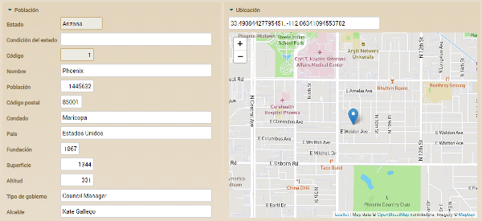
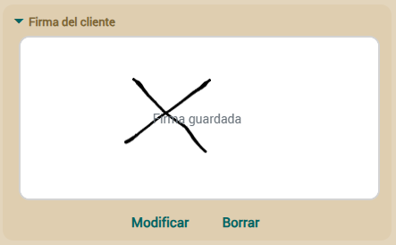
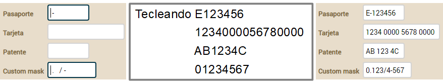
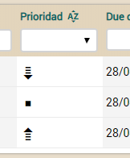

Guía de referencia:
Modelo |
Vista |
Datos
tabulares |
Mapeo
objeto/relacional |
Controladores
|
Aplicación |
Personalización
La capa del modelo en una aplicación orientada a objetos es la que
contiene la lógica de negocio, esto es la estructura de los datos con los
que se trabaja y todos los cálculos, validaciones y procesos asociados a
esos datos.
OpenXava es un marco orientado al modelo, en donde el modelo es lo más
importante, y todo lo demás (p. ej. la interfaz gráfica) depende de él.
La forma de definir el modelo en OpenXava es mediante simples clases Java
(aunque también existe una
versión
XML) y un poquito de Java. OpenXava provee una aplicación
completamente funcional a partir de la definición del modelo.
Componente de
negocio
La unidad básica para crear aplicaciones OpenXava es el componente de
negocio. Un componente de negocio se define usando una clase Java llamada
Entity. Esta clase es una entidad EJB3 convencional, o
con otras palabras, un
POJO con anotaciones que sigue el estándar
Java
Persistence API (JPA).
JPA es el estándar de Java para la persistencia, es decir, para objetos
que guardan su estado en una base de datos. Si sabes desarrollar usando
POJOs con JPA, ya sabes como desarrollar aplicaciones OpenXava.
Usando una simple clase Java podemos definir un Componente de Negocio con:
- Modelo: Estrutura de datos, validaciones, calculos,
etc.
- Vista:
Cómo se puede mostrar el modelo al usuario.
- Datos tabulares:
Cómo se muestra los datos de este componentes en modo lista (en
formato tabular).
- Mapeo
objeto/relacional: Cómo grabar y leer el estado de
los objetos desde la base de datos.
Este capítulo explica cómo definir la parte del modelo, es decir, todo
sobre la estructura, las validaciones, los cálculos, etc.
Entidad
Para definir la parte del modelo hemos de crear una clase Java o
Groovy (desde v4m6) con anotaciones. Además de
sus propias anotaciones, OpenXava sporta anotaciones de
JPA,
Hibernate
Validator e
Hibernate Annotations. Esta clase Java es una
entidad, es decir, una clase persistente que representa concepto de
negocio.
En este capítulo JPA se usa para indicar que es una anotación estándar de
Java Persistent API, HV para indicar que es una anotación de Hibernate
Validator, HA para indicar que es una anotación de Hibernate Annotations y
OX para indicar que es una anotación de OpenXava.
Ésta es la sintáxis para una entidad:
@Entity // 1
@EntityValidator // 2
@RemoveValidator // 3
public class NombreEntidad { // 4
// Propiedades // 5
// Referencias // 6
// Colecciones // 7
// Métodos // 8
// Buscadores // 9
// Métodos de retrollamada // 10
}
- @Entity (JPA, uno, obligado): Indica que esta clase es una
entidad JPA, con otras palabras, sus instancias serán objetos
persistentes.
- @EntityValidator
(OX, varios, opcional): Ejecuta una validación a
nivel de modelo. Este validador puede recibir el valor de varias
propiedades del modelo. Para validar una sola propiedad es preferible
poner el validador a nivel de propiedad.
- @RemoveValidator
(OX, varios, opcional): Se ejecuta antes de
borrar, y tiene la posibilidad de vetar el borrado del objeto.
- Declaración de la clase: Como en un clase de Java
convencional. Podemos usar extends e implements.
- Propiedades:
Propiedades de Java convencionales. Representan el estado principal
del objeto.
- Referencias:
Referencias a otras entidades o clases incrustables.
- Colecciones:
Colecciones de referencias a otras entidades o clases incrustables.
- Métodos:
Métodos Java con lógica de negocio.
- Buscadores:
Los buscadores son métodos estáticos que hacen búsquedas usando las
prestaciones de consulta de JPA.
- Métodos
de retrollamada: Los métodos JPA de retrollamada (callbacks)
para insertar lógica al crear, modificar, cargar, borrar, etc
Clases
incrustables (Embeddable)
Tal y como indica la especificación JPA:
"Una entidad puede usar otras clases finamente granuladas para
representar su estado. Instancias de estas clases, no como en el caso de
las entidades, no tiene identidad persistente. En vez de eso, existen
solo como objetos incrustados de una entidad a la que pertenecen. Estos
objetos incrustados son propiedad exclusiva de sus entidades dueñas, y
no se comparten entre entidades persistentes."
La sintaxis para una clase incrustada es:
@Embeddable // 1
public class NombreIncrustada { // 2
// Propiedades // 3
// Referencias // 4
// Metodos // 5
}
- @Embeddable (JPA, una, requerido): Indica que esta clase es
una clase incrustada de JPA, en otras palabras, sus instancias serán
parte de objetos persistente.
- Declaración de la clase: Como una clase Java
convencional. Podemos uar extends y implements.
- Propiedades:
Propiedades Java convencionales.
- Referencias:
Referencias a entidades o clases incrustables.
- Métodos:
Métodos Java con lógica de negocio.
Propiedades
Una propiedad representa parte del estado de un objeto que se puede
consultar y en algunos casos cambiar. El objeto no tiene la obligación de
guardar físicamente la información de la propiedad, solo de devolverla
cuando se le pregunte.
La sintaxis para definir una propiedad es:
@Stereotype // 1
@Column(length=) @Column(precision=) @Max @Length(max=) @Digits(integer=) // 2
@Digits(integer=) @Digits(fraction=) // 3
@Required @Min @Range(min=) @Length(min=) // 4
@Id // 5
@Hidden // 6
@SearchKey // 7
@Version // 8
@Formula // 9 Nuevo en v3.1.4
@Calculation // 10 Nuevo en v5.7
@DefaultValueCalculator // 11
@PropertyValidator // 12
private tipo nombrePropiedad; // 13
public tipo getNombrePropiedad() { ... } // 13
public void setNombrePropiedad(tipo nuevoValor) { ... } // 13
- @Stereotype
(OX, opcional): Permite especificar un
comportamiento especial para cierta propiedades.
- @Column(length=) (JPA), @Max (BV), @Length(max=) (HV), @Digits(integer=) (BV): opcional, normalmente solo se usa una):
Longitud en caracteres de la propiedad, excepto para @Max
que es el valor máximo. Especialmente útil a la hora de generar
interfaces gráficas. Si no especificamos longitud asume un valor por
defecto asociado al tipo o estereotipo que se obtiene de default-size.xml
o longitud-defecto.xml. @Max y @Digits
son de Bean Validation (nuevo en v4.1) o de Hibernate
Validator (hasta v5.2.x).
- @Column(scale=) (JPA), @Digits(fraction=) (BV): Escala (tamaño de la parte decimal) de la
propiedad. Sólo aplica a propiedades numéricas. Si no se usa @Column
o @Digits se asume un valor por defecto, si se usa @Column
sin length, sin precision y sin scale se
asume un valor por defecto para scale, si se usa @Column
con length o precision y sin scale se asume
0 (nuevo en v7.0.6 antes se asumía un valor por defecto), si se
usa @Digits sin fraction se asume 0. El valor por
defecto asociado al tipo o estereotipo que se obtiene de default-size.xml
o longitud-defecto.xml. @Digits es de Bean
Validation (nuevo en v4.1) o de Hibernate Validator (hasta
v5.2.x).
- @Required (OX), @Min (BV), @Range(min=) (HV), @Length(min=) (HV) (opcional, normalmente solo se usa una):
Indica si esa propiedad es requerida. En el caso de @Min, @Range
y @Length tenemos que poner un valor mayor que cero para min
para que se asuma la propiedad como requerida. Por defecto es true
para las propiedades clave ocultas (nuevo en v2.1.3) y false
en todos los demás casos. Al grabar OpenXava comprobará si las
propiedades requeridas están presentes, si no lo están no se producirá
la grabación y se devolverá una lista de errores de validación. La
lógica para determinar si una propiedad está presente o no se puede
configurar creando un archivo validators.xml o validadores.xml
en nuestro proyecto. Podemos ver la sintaxis en openxava/src/main/resources/xava/default-validators.xml.
@Required y @Min son restricciones de Bean Validation
desde v5.3 y eran restricciones de Hibernate
Validator hasta v5.2.x.
- @Id (JPA, opcional): Para indicar si una propiedad
forma parte de la clave. Al menos una propiedad (o referencia) ha de
ser clave. La combinación de propiedades (y referencias) clave se debe
mapear a un conjunto de campos en la base de datos que no tengan
valores repetidos, típicamente con la clave primaria.
- @Hidden (OX, opcional): Una propiedad oculta es aquella
que tiene sentido para el desarrollador pero no para el usuario. Las
propiedades ocultas se excluyen cuando se generan interfaces gráficas
automáticas, sin embargo a nivel de código generado están presentes y
son totalmente funcionales, incluso si se les hace alusión explicita
podrían aparecer en una interfaz gráfica.
- @SearchKey (OX, optional): Las propiedades clave de búsqueda
se usan por los usuarios para buscar los objetos. Son editables en la
interfaz de usuario de las referencias permitiendo al usuario teclear
su valor para buscar. OpenXava usa las propiedades clave (@Id)
para buscar por defecto, y si la propiedades clave (@Id)
están ocultas usa la primera propiedad en la vista. Con @SearchKey
podemos elegir las propiedades para buscar explicitamente.
- @Version
(JPA, opcional): Una propiedad versión se usa para
el control de concurrencia optimista. Si queremos control de
concurrencia solo necesitamos tener una propiedad marcada como @Version
en nuestra entidad. Solo podemos especificar una propiedad de versión
por entidad. Los siguientes tipos son soportados para propiedades
versión: int, Integer, short, Short, long, Long, Timestamp.
Las propiedades de versión también se consideran ocultas.
- @Formula
(HA, opcional): (Nuevo en v3.1.4) Para
calcular el valor de la propiedad usando la base de datos. Tiene que
ser un fragmento válido de SQL.
- @Calculation
(OX, uno, opcional): (Nuevo en v5.7)
Expresión aritmética para calcular el valor de la propiedad. El
cálculo se hace en la interfaz de usuario cuando alguno de los
operandos cambia.
- @DefaultValueCalculator
(OX, uno, optional): Para implementar la lógica
para calcular el valor inicial de la propiedad. Una propiedad con @DefaultValueCalculator
sí tiene setter y es persistente.
- @PropertyValidator
(OX, varios, opcional): Indica la lógica de
validación a ejecutar sobre el valor a asignar a esta propiedad antes
de crear o modificar.
- Declaración de la propiedad: Una declaración de
propiedad Java normal y corriente con getters y setters.
Podemos crear una propiedad calculada usando solo un getter
sin campo ni setter. Cualquier tipo legal para JPA está
permitido, solo hemos de proveer un Hibernate Type para
grabar en la base de datos y un editor OpenXava para dibujar como
HTML.
Estereotipo
Un estereotipo (
@Stereotype) es la forma de determinar un
comportamiento especifico dentro de un tipo. Por ejemplo, un nombre, un
comentario, una descripción, etc. todos corresponden al tipo Java
java.lang.String pero si queremos que los validadores, logitud por
defecto, editores visuales, etc. sean diferente en cada caso y necesitamos
afinar más; lo podemos hacer asignando un esterotipo a cada uno de estos
casos. Es decir, podemos tener los estereotipos NOMBRE, TEXTO_GRANDE o
DESCRIPCION y asignarlos a nuestras propiedades.
A partir de v6.6 puedes usar
anotaciones Java específicas en lugar de estereotipos (es decir puedes
usar @File en lugar de @Stereotype("ARCHIVO")), así el
compilador asegura que el código está bien escrito y además se pueden usar
atributos específicos para cada anotación.
El OpenXava viene configurado con
los siguientes estereotipos y a partir de v6.6 con su anotación
correspondiente:
- @Money
(nuevo en v6.6), DINERO, MONEY
- FOTO, PHOTO, IMAGEN, IMAGE (a partir de v6.6 puedes usar @File
como alternativa que es más flexible y con mayor rendimiento)
- @TextArea
(nuevo en v6.6), TEXTO_GRANDE, MEMO,
TEXT_AREA
- @Label
(nuevo en v6.6), ETIQUETA, LABEL
- ETIQUETA_NEGRITA, BOLD_LABEL
- @StringTime
(nuevo en v6.6), HORA, TIME (a partir de
v7.3 puedes usar propiedades tipo LocalTime en lugar de String,
cuenta con un editor más sofisticado y mapea a un dato tipo HORA en la
base de datos)
- @DateTime
(nuevo en v6.6), FECHAHORA, DATETIME (a
partir de v7.4 puedes usar propiedades con tipo LocalDateTime
en lugar de Date con @DateTime/@Stereotype("FECHAHORA"))
- GALERIA_IMAGENES, IMAGES_GALLERY (instrucciones)
(a partir de v6.6 puedes usar @Files como alternativa)
- @ZerosFilled
(nuevo en v7.1), RELLENADO_CON_CEROS, ZEROS_FILLED
- @HtmlText
(nuevo en v6.6), TEXTO_HTML, HTML_TEXT
(texto con formato editable)
- @HtmlText(simple=true)
(nuevo en v6.6), TEXTO_HTML_SIMPLE,
SIMPLE_HTML_TEXT (nuevo en v5.6, como TEXT_HTML pero con una
interfaz simplificada)
- ETIQUETA_IMAGEN, IMAGE_LABEL (imagen que depende del contenido de la
propiedad)
- @Email (de javax.validation.constraints) (nuevo
en v6.6), EMAIL
- @Telephone
(nuevo en v6.6), TELEFONO, TELEPHONE
- @URL (de org.hibernate.validator.constraints) (nuevo
en v6.6), WEBURL
- @IP
(nuevo en v6.6), IP
- @ISBN (de org.hibernate.validator.constraints) (nuevo
en v6.6), ISBN
- @CreditCardNumber (from org.hibernate.validator.constraints)
(nuevo en v6.6), TARJETA_CREDITO, CREDIT_CARD
- @EmailList
(nuevo en v6.6), LISTA_EMAIL, EMAIL_LIST
- LIBRERIA_DOCUMENTOS, DOCUMENT_LIBRARY (nuevo en v4m6, hasta
v6.6.3, sólo funciona dentro de Liferay)
- @Password
(nuevo en v6.6), CONTRASENA, PASSWORD (nuevo en v4.1)
- @MAC
(new in v6.6), MAC (nuevo en v4.8)
- @File
(nuevo en v6.6), ARCHIVO, FILE (nuevo
en v5.0) (instrucciones)
- @Files
(nuevo en v6.6), ARCHIVOS, FILES (nuevo
en v5.1) (instrucciones)
- @Icon
(nuevo en v6.6), ICONO, ICON (nuevo
en v5.5)
- @Discussion
(nuevo en v6.6), DISCUSION, DISCUSSION (nuevo
en v5.6) (instrucciones)
- @Coordinates,
COORDENADAS, COORDINATES (nuevo en v6.6) (instrucciones)
- @HandwrittenSignature, FIRMA_MANUSCRITA, HANDWRITTEN_SIGNATURE (nuevo en v7.6) (instrucciones)
Aparte de las anotaciones estilo estereotipo de arriba puedes anotar tus
propiedades con
anotaciones
relacionadas con la vista.
Vamos a ver como definiríamos un
estereotipo propio. Crearemos uno llamado NOMBRE_PERSONA para representar
nombres de persona.
Editamos (o creamos) el archivo
editors.xml o
editores.xml
en nuestra carpeta
src/main/resources/xava (simplemente
xava
antes de v7) Y añadimos
<editor url="editorNombrePersona.jsp">
<para-estereotipo estereotipo="NOMBRE_PERSONA"/>
<para-anotacion anotacion="com.tuempresa.tuaplicacion.anotaciones.NombrePersona"/> <!-- Nuevo en v6.6 -->
</editor>
De esta forma indicamos que editor se ha de ejecutar para editar y
visualizar propiedades con el estereotipo NOMBRE_PERSONA. Fíjate como
desde v6.6 puedes usar una anotación en lugar de un estereotipo, o usar
ambas cosas.
Además es útil indicar la longitud por defecto, eso se hace editando
default-size.xml
o
longitud-defecto.xml:
<para-estereotipo nombre="NOMBRE_PERSONA" longitud="40"/>
<para-anotacion clase="com.tuempresa.tuaplicacion.anotaciones.NombrePersona" longitud="40"/> <!-- Nuevo en v6.6 -->
Y así si no ponemos longitud asumirá 40 por defecto.
Menos común es querer cambiar el validador para requerido, pero si
queremos cambiarlo lo podemos hacer añadiendo a
validators.xml o
validadores.xml de nuestro proyecto lo siguiente:
<validador-requerido>
<clase-validador clase="org.openxava.validators.NotBlankCharacterValidator"/>
<para-estereotipo estereotipo="NOMBRE_PERSONA"/>
<para-anotacion anotacion="com.tuempresa.tuaplicacion.anotaciones.NombrePersona"/> <!-- Nuevo en v6.6 -->
</validador-requerido>
Ahora podemos definir propiedades con estereotipo NOMBRE_PERSONA:
@Stereotype("NOMBRE_PERSONA")
private String nombre;
En este caso asume 40 longitud y tipo
String, así como
ejecutar el validador
NotBlankCharacterValidator
para comprobar que es requerido.
A partir de v6.6 puedes usar una
anotación Java en lugar de un estereotipo, de esta forma:
@NombrePersona
private String nombre;
Obviamente has de escribir el
código para la anotación
@NombrePersona. Echa un vistazo a la
documentación de
personalización. para aprender más sobre como definir tus propias
anotaciones.
Estereotipo
GALERIA_IMAGENES
A partir de v6.6 puedes usar @Files en su
lugar porque ahora @Files muestra una vista previa de los archivos
subidos. @Files tiene más opciones que GALERIA_IMAGENES y permite varios
mecanismos de persistencia. Si queremos que una propiedad de
nuestro componente almacene una galería de imágenes. Solo necesitamos
declarar que nuestra propiedad sea del estereotipo GALERIA_IMAGENES. De
esta manera:
@Stereotype("GALERIA_IMAGENES")
private String fotos;
Además, en el mapeo tenemos que mapear la propiedad contra una columna
adecuada para almacenar una cadena (String) con 32 caracteres de longitud
(VARCHAR(32)).
Y ya está todo.
Pero, para que nuestra aplicación soporte este estereotipo necesitamos
configurar nuestro sistema.
Lo primero es crear a tabla en la base de datos para almacenar las
imágenes:
CREATE TABLE IMAGENES (
ID VARCHAR(32) NOT NULL PRIMARY KEY,
GALLERY VARCHAR(32) NOT NULL,
IMAGE BLOB);
CREATE INDEX IMAGENES01
ON IMAGENES (GALLERY);
El tipo de la columna IMAGE puede ser un tipo más adecuado para almacenar
byte [] en el caso de nuestra base de datos (por ejemplo LONGVARBINARY) .
Verifica que
persistence.xml contiene la entidad
GalleryImage,
si no añádela:
<persistence-unit name="default">
<provider>org.hibernate.ejb.HibernatePersistence</provider>
<non-jta-data-source>java:comp/env/jdbc/OpenXavaTestDS</non-jta-data-source>
<class>org.openxava.session.GalleryImage</class> <!-- AÑADE ESTA LÍNEA -->
<class>org.openxava.web.editors.DiscussionComment</class>
...
</persistence-unit>
Fíjate que hemos añadido
<class>org.openxava.session.GalleryImage</class>.
Si usas una versión de OpenXava anterior a 7.0 necesitas definir el mapeo
en tu archivo
persistence/hibernate.cfg.xml, así:
<hibernate-configuration>
<session-factory>
...
<mapping resource="GalleryImage.hbm.xml"/>
...
</session-factory>
</hibernate-configuration>
Después de todo esto ya podemos usar el estereotipo GALERIA_IMAGENES en
los componentes de nuestra aplicación.
Archivo (nuevo en v5.0) y archivos (nuevo
en v5.1)
Si queremos que una propiedad de nuestro componente adjunte un archivo,
sólo necesitamos declarar una propiedad con la anotación
@File (nuevo
en v6.6). De esta manera:
@File
@Column(length=32)
private String documento;
O con el estereotipo ARCHIVO si
usas una versión anterior a la 6.6. Así:
@Stereotype("ARCHIVO")
@Column(length=32)
private String documento;
Usa
@Files (nuevo en v6.6) para adjuntar múltiples
archivos:
@Files
@Column(length=32)
private String documentos;
O el estereotipo ARCHIVOS si usas
una versión anterior a la 6.6. Así:
@Stereotype("ARCHIVOS")
@Column(length=32)
private String documentos;
Cuando usas la versión con anotación (
@File o
@Files)
puedes definir atributos como
acceptFileTypes o
maxFileSizeInKb
para restringir los archivos que el usuario puede subir. Por
ejemplo, con este código:
@File(acceptFileTypes="image/*", maxFileSizeInKb=90)
@Column(length=32)
private String foto;
El usuario sólo puede subir
imágenes de 90 Kb o menos, y con este otro:
@Files(acceptFileTypes="text/csv, application/vnd.ms-excel, application/vnd.openxmlformats-officedocument.spreadsheetml.sheet")
@Column(length=32)
private String hojasCalculo;
Sólo CSV y archivos Excel. Como
puedes ver en
acceptFileTypes pones una
lista
de tipos mime separada por comas y puedes usar asteriscos.
OpenXava puede almacenar los
archivos en
base de datos o en
el sistema de archivos.
Almacenamiento
en el Sistema de Archivos
Éste es por defecto y no requiere de configuraciones adicionales.
El directorio de almacenamiento es
$HOME/oxfiles
(GNU/Linux) o
%USERPROFILE%\oxfiles (Windows). Podemos
configurar un directorio diferente mediante la propiedad
filesPath
en
xava.properties.
Almacenamiento
en Base de Datos
Debemos realizar tres configuraciones adicionales:
- Configurar en xava.properties de nuestro
proyecto la propiedad filePersistorClass.
filePersistorClass=org.openxava.web.editors.JPAFilePersistor
...
- Modificar el persistence.xml de nuestro
proyecto.
<persistence-unit name="default">
<provider>org.hibernate.ejb.HibernatePersistence</provider>
<non-jta-data-source>java:comp/env/jdbc/OpenXavaTestDS</non-jta-data-source>
<class>org.openxava.session.GalleryImage</class>
<class>org.openxava.web.editors.AttachedFile</class>
...
</persistence-unit>
...
<persistence-unit name="junit">
<provider>org.hibernate.ejb.HibernatePersistence</provider>
<class>org.openxava.web.editors.AttachedFile</class>
....
</persistence-unit>
Observa que hemos añadido
<class>org.openxava.web.editors.AttachedFile</class>
a ambas unidades de persistencia.
- Al generar nuestra base de datos se creará la tabla OXFILES:
CREATE TABLE OXFILES (
ID VARCHAR(32) NOT NULL PRIMARY KEY,
NAME VARCHAR(255),
DATA LONGVARBINARY,
LIBRARYID VARCHAR(32)
);
Debemos verificar que el tipo de la columna DATA sea el tipo más adecuado
para almacenar byte[] (en nuestro caso LONGVARBINARY).
Manipular los archivos por código
Las propiedades anotadas con @File, @Files, @HandwrittenSignature,
Stereotype("ARCHIVO"), Stereotype("ARCHIVOS") o Stereotype("FIRMA_MANUSCRITA")
solo almacenan un identificador de 32 caracteres, no almacenan el contenido del archivo. Para acceder desde tu
propio código al contenido del archivo subido has de usar un IFilePersistor
que se obtiene desde FilePersistorFactory,
clases que puedes encontrar en el paquete org.openxava.web.editors.
Estas clases funcionan igual no importa si los archivos se guardan en el
sistema de archivos, una base de datos o cualquier otro sitio.
En el caso de @File, @HandwrittenSignature, @Stereotype("ARCHIVO") o
@Stereotype("FIRMA_MANUSCRITA") la propiedad guarda directamente el id del archivo.
Por ejemplo si tenemos una propiedad como esta:
@File @Column(length=32)
String foto;
Podemos llenarla con un archivo usando nuestro propio código así:
import java.nio.file.*;
import org.openxava.actions.*;
import org.openxava.web.editors.*;
public class CargarFoto extends ViewBaseAction {
public void execute() throws Exception {
// En este ejemplo obtenemos el archivos del sistema de archivos
// pero en tu caso puedes obtener el archivo desde cualquier otro sitio
String filePath = "/home/me/images/mifoto.png";
byte[] fileBytes = Files.readAllBytes(Paths.get(filePath));
// Un IFilePersistor para trabajar con el archivo
IFilePersistor filePersistor = FilePersistorFactory.getInstance();
// Creamos un objeto AttachedFile
AttachedFile file = new AttachedFile();
file.setName("mifoto.png");
file.setData(fileBytes);
// Esto graba el archivo
filePersistor.save(file);
// Después de grabado, el AttachedFile tiene el id generado
// por lo que lo asignamos a la propiedad de la vista
getView().setValue("foto", file.getId());
}
}
Creas un AttachedFile
y lo guardas con un IFilePersistor,
luego obtienes el id del archivo para usarlo como valor para la
propiedad. La propiedad foto almacena el id del archivo.
El proceso contrario, es decir, obtener y manipular el archivo que ya
hay en la propiedad @File, sería así:
import java.nio.file.*;
import org.openxava.actions.*;
import org.openxava.web.editors.*;
public class GrabarFoto extends ViewBaseAction {
public void execute() throws Exception {
// Un IFilePersistor para trabajar con el archivo
IFilePersistor filePersistor = FilePersistorFactory.getInstance();
// Obtenemos el id de la foto de la propiedad
String photoId = getView().getValueString("foto");
// Y buscamos el AttachedFile a partir del id usando IFilePersistor
AttachedFile file = filePersistor.find(photoId);
// Obtenemos el nombre y el contenido del AttachedFile
String fileName = file.getName();
byte[] fileBytes = file.getData();
// En este ejemplo grabamos el archivo en el sistema de archivos
// pero tú puedes hacer lo que quieras con él
String filePath = "/home/me/images/" + fileName;
Files.write(Paths.get(filePath), fileBytes);
}
}
Buscas un AttachedFile usando un IFilePersistor a
partir del id de la foto que tienes en la propiedad.
Trabajar con @Files o @Stereotype("ARCHIVOS") es
ligeramente diferente, porque en este caso en la propiedad se almacen el
id de la librería, no del archivo. Una librería es un grupo de archivos.
Cada archivo tiene su propio id, pero todos comparten un id común de
librería. Por ejemplo, con una propiedad como esta:
@Files @Column(length=32)
String documentos;
Podemos llenarla con varios archivos usando nuestro propio código así:
import java.nio.file.*;
import org.openxava.actions.*;
import org.openxava.web.editors.*;
public class CargarDocumentos
extends GenerateIdForPropertyBaseAction { // Para usar el método generateIdForProperty()
public void execute() throws Exception {
// En este ejemplo vamos a subir algunos archivos desde el sistema de archivos
// pero podrías obtener los archivos o su contenido desde cualquier otro lugar
String basePath = "/home/me/documents/";
String [] fileNames = {
"limiting-data-by-user.pdf",
"quick-start.odg"
};
// Necesitamos generar un id para la librería la primera vez o usar el que ya existe
// Este trabajo lo hace generateIdForProperty() por nosotros
// El id generado se deja en la propiedad 'documentos' en la vista
String libraryId = generateIdForProperty("documentos");
// Un IFilePersistor para trabajar con los archivos
IFilePersistor filePersistor = FilePersistorFactory.getInstance();
for (String fileName: fileNames) {
// En nuestro ejemplo obtenemos el contenido del archivo desde el sistema de archivos
byte[] fileBytes = Files.readAllBytes(Paths.get(basePath + fileName));
// Creamos un AttachedFile y lo rellenamos
AttachedFile file = new AttachedFile();
file.setLibraryId(libraryId); // El mismo libraryId para todos los archivos
file.setName(fileName);
file.setData(fileBytes);
// Lo grabamos usando IFilePersistor
filePersistor.save(file);
}
}
}
El truco es que tenemos que tener un único id de librería para asignar
a cada uno de los archivos que vamos a ir guardando. Este id lo
generamos con generateIdForProperty() que lo genera si no existe
o lo devuelve si ya existente, también si genera uno nuevo lo asigna a
la propiedad en la vista, por lo que al grabar la entidad se grabará con
el id de librería correcto. Lo demás es simplemente un bucle creando
AttachedFile y grabándolos con IFilePersistor, asignando a
cada uno el mismo id de librería.
El proceso contrario, es decir, obtener y manipular los archivos que ya
hay en la propiedad @Files, sería así:
import java.nio.file.*;
import java.util.*;
import org.openxava.actions.*;
import org.openxava.web.editors.*;
public class GrabarDocumentos extends ViewBaseAction {
public void execute() throws Exception {
// Un IFilePersistor para trabajar con los archivos
IFilePersistor filePersistor = FilePersistorFactory.getInstance();
// Con @Files la propiedad almacena el id de la librería y no un id de archivo
String libraryId = getView().getValueString("documentos");
// Usamos findLibrary() de IFilePersistor para obtener la colección de archivos
Collection<AttachedFile> files =filePersistor.findLibrary(libraryId);
for (AttachedFile file: files) {
// Obtenemos el nombre y el contenido de AttachedFile
String fileName = file.getName();
byte[] fileBytes = file.getData();
String filePath = "/home/me/documents/" + fileName;
// En nuestro ejemplo lo grabamos en el sistema de archivos,
// pero en tu caso puedes hacer lo que quieras
Files.write(Paths.get(filePath), fileBytes);
}
}
}
Recuerda que para @Files en la propiedad se guarda el id de la
librería, no el id del archivo. A partir de este id usamos el método findLibrary()
de IFilePersistor para obtener todos los archivos asociados a
esa librería, es decir a esa propiedad. Después hacemos un bucle sobre
esos archivos y los procesamos al gusto.
Discusión (nuevo en v5.6)
Si quieres que una propiedad de tu componente contenga un hilo de
discusión, como los que hay en los foros, gestores de incidencias, blogs,
etc. Sólo has de anotar tu propiedad con
@Discussion (nuevo en
v6.6), de esta manera:
@Discussion
@Column(length=32)
private String discusion;
O con el estereotipo DISCUSION si usas una versión anterior a la
6.6. Así:
@Stereotype("DISCUSION")
@Column(length=32)
private String discusion;
Si además quieres que cuando se
borre tu entidad su discusión también se elimine completamente de la base
de datos, has de añadir el siguiente código a tu entidad:
@PreRemove
private void borrarDiscusion() {
DiscussionComment.removeForDiscussion(discusion);
}
Verifica que
persistence.xml contiene la entidad
DiscussionComment,
si no añádelo:
<persistence-unit name="default">
<provider>org.hibernate.ejb.HibernatePersistence</provider>
<non-jta-data-source>java:comp/env/jdbc/OpenXavaTestDS</non-jta-data-source>
<class>org.openxava.session.GalleryImage</class>
<class>org.openxava.web.editors.DiscussionComment</class> <!-- AÑADE ESTA LÍNEA -->
...
</persistence-unit>
Fíjate que hemos añadido
<class>org.openxava.web.editors.DiscussionComment</class>.
Cuando se genere la base datos, la tabla OXDISCUSSIONCOMMENTS se creará:
CREATE TABLE OXDISCUSSIONCOMMENTS (
ID VARCHAR(32) NOT NULL,
COMMENT CLOB(16777216),
DISCUSSIONID VARCHAR(32),
TIME TIMESTAMP,
USERNAME VARCHAR(30),
PRIMARY KEY (ID)
);
CREATE INDEX OXDISCUSSIONCOMMENTS_DISCUSSIONID_INDEX
ON OXDISCUSSIONCOMMENTS (DISCUSSIONID);
Comprueba que el tipo para la columna COMMENT es el más adecuado para
almacenar un texto grande (CLOB por defecto) en tu base de datos, si no
haz un ALTER COLUMN para poner un tipo mejor.
Con Tomcat 6 has de editar la clase
org.openxava.web.editors.DiscussionComment
y quitarle la anotación
@Lob de la propiedad
comment.
Coordenadas (nuevo en v6.6)
Una propiedad coordenadas te permite escoger un punto en un mapa y
guardarlo. Para definirla anota tu propiedad con
@Coordinates o
@Stereotype("COORDENADAS"):
@Coordinates @Column(length=50)
private String ubicacion;
Fíjate en el tipo, String,
y la longitud, 50, suficiente para almacenar coordenadas. A partir del
código de arriba obtienes:

El usuario puede marcar en
cualquier parte del mapa y las coordenadas cambiarán. También si teclea
o pega las coordenadas en el campo el mapa y la marca se reposicionan.
Puedes usar
@Coordinates
sin ninguna configuración especial, sin embargo tienes la opción de
cambiar el proveedor de imágenes de trozos de mapa (
tile provider)
en
xava.properties. OpenXava usa una librería JavaScript de
código abierto para dibujar los mapas (
Leaflet)
y los mapas son gratuitos, de
OpenStreetMap.
Aún así necesitamos un servidor para generar las imágenes de lo mapas
bajo demanda y para eso deberíamos instalar y configurar un software en
un servidor que convierta los mapas en imágenes y los envíe al
componente JavaScript. Configurar este servidor es complejo y cuesta
tiempo, por eso la mayoría de las veces es más conveniente usar
servidores de terceros que ofrecen ese servicio, lo que llamamos en
inglés
tile providers. OpenXava te permite definir el
tile
provider que quieras en
xava.properties. Por defecto,
viene configurado para usar
OpenTopoMap
con estas entradas en
xava.properties:
# OpenTopoMap
mapsTileProvider=https://b.tile.opentopomap.org/{z}/{x}/{y}.png
mapsAttribution=Map data © <a href="https://www.openstreetmap.org/copyright">OpenStreetMap</a> contributors, Imagery © <a href="https://opentopomap.org">OpenTopoMap</a> (<a href="https://creativecommons.org/licenses/by-sa/3.0/">CC-BY-SA</a>)
OpenTopoMap es de libre uso
incluso para proyectos comerciales con la licencia CC-BY-SA.
Puedes definir otros
proveedores, como
MapBox, de esta
manera:
# MapBox
# Cambia abajo YOUR_ACCESS_TOKEN por tu propio token de acceso
mapsTileProvider=https://api.mapbox.com/styles/v1/mapbox/streets-v11/tiles/{z}/{x}/{y}?access_token=YOUR_ACCESS_TOKEN
mapsAttribution=Map data © <a href="https://www.openstreetmap.org/copyright">OpenStreetMap</a> contributors, Imagery © <a href="https://www.mapbox.com/">Mapbox</a>
mapsTileSize=512
mapsZoomOffset=-1
MapBox es un proveedor
comercial, aunque ofrecen planes gratuitos. Has de registrarte en
https://www.mapbox.com/
para obtener un token de acceso. Recuerda cambiar YOUR_ACCESS_TOKEN en
la URL por tu propio token de acceso. Para este proveedor has de definir
mapsTileSize y
mapsZoomOffset para que los mapas se
visualicen bien. Con MapBox el mapa anterior tendría este aspecto:

El editor para
@Coordinates
es un editor con marco, es decir están dentro de un marco que el usuario
puede plegar. Puedes usar las
características de
disposición de OpenXava por medido de @View para ponerlo
en la interfaz de usuario en la forma que quieras, por ejemplo, si
quieres un formulario con todos los campos a la izquierda y el mapa a la
derecha, puedes escribir una anotación
@View como esta:
@View(members=
"ciudad [ estado; "
+ "condicionEstado;"
+ "codigo;"
+ "nombre;"
+ "población;"
+ "codigoPostal;"
+ "condado;"
+ "pais;"
+ "fundacion;"
+ "superficie;"
+ "altitud;"
+ "tipoGobierno;"
+ "alcalde;"
+ "], "
+ "ubicacion")
Donde ubicacion es una
propiedad @Coordinates. Fíjate que usamos un grupo (las
propiedades entre corchetes []) para las propiedades planas y colocamos
la propiedad ubicacion al lado (usando una coma). El resultado
es:

Firma manuscrita (nuevo en v7.6)
La firma manuscrita sólo está disponible con XavaPro
Para permitir al usuario firmar a mano y guardar su firma en una propiedad,
has de anotar la propiedad con @HandwrittenSignature o @Stereotype("FIRMA_MANUSCRITA"):
import com.openxava.annotations.*; // No org.openxava.annotations.*
...
@HandwrittenSignature
@Column(length=32)
private String firmaCliente;
Nota como la anotación está en el paquete com.openxava.annotations (de XavaPro) y no
en org.openxava.annotations.
La propiedad se visualizaría así:

El usuario podrá firmar con el dedo o un lapiz para pantallas táctiles, especialmente
pensado para móviles y tablets, aunque también es posible firmar usando el ratón.
El tipo de la propiedad es un String de 32 caracteres donde se almacena un id,
no la firma en sí. Las firmas se pueden almacenar
en el sistema de archivos
o
en la base de datos, usando el mismo mecanismo (el mismo filePersistorClass)
que @File y @Files. También es posible
manipular las firmas por código con FilePersistorFactory como
con @File y @Files.
Máscara (nuevo en v7.1)
Una máscara es una cadena de carácteres que define el formato válido de
los valores de entrada. Para esto debes usar la anotación
@Mask
con algunos de los siguientes validadores:
- 'L': el usuario deberá ingresar en su lugar una letra alfabética de
A ~ z.
- '0': el usuario deberá ingresar en su lugar un dígito.
- 'A': el usuario deberá ingresar en su lugar un carácter
alfanumérico.
- '#': el usuario deberá ingresar en su lugar un dígito, espacio en
blanco, '+' o '-'.
También puedes agregar carácteres especiales, espacio en blanco de manera
estática e incluso combinar los validadores, por ejemplo:
@Mask("L-000000")
private String pasaporte;
@Mask("0000 0000 0000 0000")
private String tarjeta;
@Mask("LL 000 AA")
private String patente;
@Mask("0.000/0-000")
private String customMask;

Concurrencia
y propiedad versión
Concurrencia es la habilidad de una aplicación para permitir que varios
usuarios graben datos al mismo tiempo sin perder información. OpenXava usa
un esquema de concurrencia optimista. Usando concurrencia optimista los
registros no se bloquean permitiendo un alto nivel de concurrencia sin
perder la integridad de la información.
Por ejemplo, si un usuario A lee un registro y entonces un usuario B lee
el mismo registro, lo modifica y graba los cambios, cuando el usuario A
intente grabar el registro recibirá un error y tendrá que refrescar los
datos y reintentar su modificación.
Para activar el soporte de concurrencia para un componente OpenXava solo
necesitamos declarar una propiedad usando
@Version, de esta manera:
@Version
private Integer version;
Esta propiedad es para uso del mecanismo de persistencia (Hibernate o
JPA), ni nuestra aplicación ni usuarios deberían acceder directamente a
ella. Si no usas evolución automática de esquema recuerda añadir la
columna VERSION a la tabla.
Enums
OpenXava soporta
enums de Java 5. Un
enum permite
definir una propiedad que solo puede contener los valores indicados.
Es fácil de usar, veamos un ejemplo:
private Distancia distancia;
public enum Distancia { LOCAL, NACIONAL, INTERNACIONAL };
La propiedad
distancia solo puede valer LOCAL, NACIONAL o
INTERNACIONAL, y como no hemos puesto
@Required también permite
valor vacío (null). Desde v5.3 si pones
@Required, la primera
opción es por defecto y ya no mostrará valor vacío. Si deseas cambiar la
opción por defecto usa
@DefaultValueCalculator. Desde v5.6.1 los
enums anotados con
@Required en una
clase
incrustable mostrarán valor vacío si ésta es utilizada en una
colección de elementos.
A nivel de interfaz gráfico la implementación web actual usa un combo. La
etiqueta para cada valor se obtienen de los archivos
i18n.
A nivel de base datos por defecto guarda el entero (0 para LOCAL, 1 para
NACIONAL, 2 para INTERNACIONAL y null para cuando no hay valor), pero esto
se puede configurar fácilmente para poder usar sin problemas bases de
datos legadas. Ver más de esto último en el
capítulo
sobre mapeo.
Enums con icono (nuevo en
v6.3)
Puedes asociar un icono a cada opción de un
enum usando
org.openxava.model.IIconEnum:
public enum Prioridad implements IIconEnum {
BAJA("transfer-down"), MEDIA("square-medium"), ALTA("transfer-up");
private String icon;
private Priority(String icon) {
this.icon = icon;
}
public String getIcon() {
return icon;
}
};
private Prioridad prioridad;
Simplemente haz que tu
enum implemente
IIconEnum
que fuerza a que tengas un método
getIcon(). Este método ha de
devolver un identificador de icono de
Material
Design Icons. OpenXava puede usar estos iconos en varias partes de
la interfaz de usuario, por ejemplo en la lista:

Propiedades
calculadas
Las propiedades calculadas son de solo lectura (solo tienen
getter)
y no persistentes (no se almacenan en ninguna columna de la tabla de base
de datos).
Una propiedad calculada se define de esta manera:
@Depends("precioUnitario") // 1
@Max(9999999999L) // 2
public BigDecimal getPrecioUnitarioEnPesetas() {
if (precioUnitario == null) return null;
return precioUnitario.multiply(new BigDecimal("166.386"))
.setScale(0, BigDecimal.ROUND_HALF_UP);
}
De acuerdo con esta definición ahora podemos usar el código de esta
manera:
Producto producto = ...
producto.setPrecioUnitario(2);
BigDecimal resultado = producto.getPrecioUnitarioEnPesetas();
Y
resultado contendrá 332,772.
Cuando la propiedad
precioUnitarioEnPesetas se visualiza al
usuario no es editable, y su editor tiene una longitud de 10, indicado
usando
@Max(9999999999L) (2). También, dado que usamos
@Depends("precioUnitario")
(1) cuando el usuario cambie la propiedad
precioUnitario en la
interfaz de usuario la propiedad
precioUnitarioEnPesetas será
recalculada y su valor será refrescado de cara al usuario.
@Depends
permite definir varias propiedades separadas por comas y se puede depender
de propiedades planas y referencias, consulta el
JavaDoc
de @Depends para más detalles.
Desde una propiedad calculada tenemos acceso a conexiones JDBC. Un
ejemplo:
@Max(999)
public int getCantidadLineas() {
// Un ejemplo de uso de JDBC
Connection con = null;
try {
con = DataSourceConnectionProvider.getByComponent("Factura").getConnection(); // 1
String tabla = MetaModel.get("LineaFactura").getMapping().getTable();
PreparedStatement ps = con.prepareStatement("select count(*) from " + tabla +
" where FACTURA_AÑO = ? and FACTURA_NUMERO = ?");
ps.setInt(1, getAño());
ps.setInt(2, getNumero());
ResultSet rs = ps.executeQuery();
rs.next();
Integer result = new Integer(rs.getInt(1));
ps.close();
return result;
}
catch (Exception ex) {
log.error("Problemas al calcular cantidad de líneas de una Factura", ex);
// Podemos lanzar cualquier RuntimeException aquí
throw new SystemException(ex);
}
finally {
try {
con.close();
}
catch (Exception ex) {
}
}
}
Es verdad, el código JDBC es feo y complicado, pero a veces puede ayudar a
resolver problemas de rendimiento. La clase
DataSourceConnectionProvider
nos permite obtener la conexión asociada a la misma fuente de datos que la
entidad indicada (en este caso
Factura). Esta clase es para
nuestra conveniencia, también podemos acceder a una conexión JDBC usando
JNDI o cualquier otro medio que queramos. De hecho, en una propiedad
calculada podemos escribir cualquier código que Java nos permita.
Si estamos usando acceso basado en propiedades, es decir si anotamos los
getters
o
setters, entonces hemos de añadir la anotación
@Transient a nuestra propiedad calculada, de
esta forma:
private long codigo;
@Id @Column(length=10) // Anotamos el getter,
public long getCodigo() { // por tanto JPA usará acceso basado en propiedades para nuestra clase
return codigo;
}
public void setCodigo(long codigo) {
this.codigo = codigo;
}
@Transient // Hemos de anotar como Transient nuestra propiedad calculada
public String getZoneOne() { // porque usamos acceso basado en propiedades
return "En ZONA 1";
}
Fórmula
(nuevo en v3.1.4)
Usando
@Formula de
Hibernate Annotations podemos definir un cálculo para
nuestra propiedad. Este cálculo se expresa usando SQL, y es ejecutado en
la propia base de datos, en vez de por Java. Simplemente hemos de escribir
un fragmento válido de SQL:
@org.hibernate.annotations.Formula("PRECIOUNITARIO * 1.16")
private BigDecimal precioUnitarioConIVA;
public BigDecimal getPrecioUnitarioConIVA() {
return precioUnitarioConIVA;
}
El uso es simple. Hemos de poner el cálculo como lo hariamos si lo
tuvieramos que poner en una sentencia SQL.
Normalmente las propiedades con
@Formula son propiedades de solo
lectura, es decir, solo tienen
getter, no tienen
setter.
Cuando el objeto es leído de la base de datos se hace el cálculo por la
misma base de datos y se rellena la propiedad con el resultado.
Esto es una alternativa a las propiedades calculadas. Tiene la ventaja de
que el usuario puede filtrar por esta propiedad en modo lista, y la
desventaja de que hemos de usar SQL en vez de Java, y no podemos usar
@Depends para recalcular el valor en vivo.
Calculador
valor por defecto
Con
@DefaultValueCalculator podemos asociar lógica
a una propiedad, en este caso la propiedad es lectura y escritura. Este
calculador se usa para calcular el valor inicial. Por ejemplo:
@DefaultValueCalculator(CurrentYearCalculator.class)
private int año;
En este caso cuando el usuario intenta crear una nueva factura (por
ejemplo) se encontrará con que el campo de año ya tiene valor, que él
puede cambiar si quiere. La lógica para generar este valor está en la
clase
CurrentYearCalculator class, así:
package org.openxava.calculators;
import java.util.*;
/**
* @author Javier Paniza
*/
public class CurrentYearCalculator implements ICalculator {
public Object calculate() throws Exception {
Calendar cal = Calendar.getInstance();
cal.setTime(new java.util.Date());
return new Integer(cal.get(Calendar.YEAR));
}
}
Es posible personalizar el comportamiento de un calculador poniendo el
valor de sus propiedades, como sigue:
@DefaultValueCalculator(
value=org.openxava.calculators.StringCalculator.class,
properties={ @PropertyValue(name="string", value="BUENA") }
)
private String relacionConComercial;
En este caso para calcular el valor por defecto OpenXava instancia
StringCalculator
y entonces inyecta el valor "BUENA" en la propiedad
string de
StringCalculator,
y finalmente llama al método
calculate() para obtener el valor
por defecto para
relacionConComercial. Como se ve, el uso de la
anotación
@PropertyValue permite crear calculadores
reutilizable.
@PropertyValue permite inyectar valores desde otras propiedades
visualizadas, de esta forma:
@DefaultValueCalculator(
value=org.openxava.test.calculadores.CalculadorObservacionesTransportista.class,
properties={
@PropertyValue(name="tipoPermisoConducir", from="permisoConducir.tipo")
}
)
private String observaciones;
En este caso antes de ejecutar el calculador OpenXava llena la propiedad
permisoConducir
de
CalculadorObservacionesTransportista con el valor de la
propiedad visualizada
tipo de la referencia
permisoConducir.
Como se ve el atributo
from soporta propiedades calificadas
(referencia.propiedad). Además, cada ve que
permisoConducir.tipo
cambia
observaciones se recalcula (
nuevo en v5.1, con
versiones anteriores se recalculaba solo la primera vez).
Además podemos usar
@PropertyValue sin
from ni
value:
@DefaultValueCalculator(value=CalculadorPrecioDefectoProducto.class, properties=
@PropertyValue(name="codigoFamilia")
)
En este caso OpenXava coge el valor de la propiedad visualizada
codigoFamilia
y lo inyecta en la propiedad
codigoFamilia del calculador, es
decir
@PropertyValue(name="codigoFamilia") equivale a
@PropertyValue(name="codigoFamilia",
from="codigoFamilia").
Desde un calculador tenemos acceso a conexiones JDBC, he aquí un ejemplo:
@DefaultValueCalculator(value=CalculadorCantidadLineas.class,
properties= {
@PropertyValue(name="año"),
@PropertyValue(name="numero"),
}
)
private int cantidadLineas;
Y la clase del calculador:
package org.openxava.test.calculadores;
import java.sql.*;
import org.openxava.calculators.*;
import org.openxava.util.*;
/**
* @author Javier Paniza
*/
public class CalculadorCantidadLineas implements IJDBCCalculator { // 1
private IConnectionProvider provider;
private int año;
private int numero;
public void setConnectionProvider(IConnectionProvider provider) { // 2
this.provider = provider;
}
public Object calculate() throws Exception {
Connection con = provider.getConnection();
try {
PreparedStatement ps = con.prepareStatement(
"select count(*) from XAVATEST.LINEAFACTURA “ +
“where FACTURA_AÑO = ? and FACTURA_NUMERO = ?");
ps.setInt(1, getAño());
ps.setInt(2, getNumero());
ResultSet rs = ps.executeQuery();
rs.next();
Integer result = new Integer(rs.getInt(1));
ps.close();
return result;
}
finally {
con.close();
}
}
public int getAño() {
return año;
}
public int getNumero() {
return numero;
}
public void setAño(int año) {
this.año = año;
}
public void setNumero(int numero) {
this.numero = numero;
}
}
Para usar JDBC nuestro calculador tiene que implementar
IJDBCCalculator
(1) y entonces recibirá un
IConnectionProvider (2) que podemos
usar dentro de
calculate().
OpenXava dispone de un conjunto de calculadores incluidos de uso genérico,
que se pueden encontrar en
org.openxava.calculators.
Valores
por defecto al crear
Podemos indicar que el valor sea calculado justo antes de crear (insertar
en la base de datos) un objeto por primera vez.
Usualmente para las claves usamos el estándar JPA. Por ejemplo, si
queremos usar una columna
identity (auto incremento) como clave:
@Id @Hidden
@GeneratedValue(strategy=GenerationType.IDENTITY)
private Integer id;
Podemos usar otras técnicas de generación, por ejemplo, una
sequence
de base de datos puede ser definida usando el estándar JPA de esta manera:
@SequenceGenerator(name="SIZE_SEQ", sequenceName="SIZE_ID_SEQ", allocationSize=1 )
@Hidden @Id @GeneratedValue(strategy=GenerationType.SEQUENCE, generator="SIZE_SEQ")
private Integer id;
Si queremos generar un identificador único de tipo String y 32 caracteres,
podemos usar una extensión de Hibernate de JPA:
@Id @GeneratedValue(generator="system-uuid") @Hidden
@GenericGenerator(name="system-uuid", strategy = "uuid")
private String oid;
Ver la sección 9.1.9 de la especificación JPA 1.0 (parte de JSR-220) para
aprender más sobre
@GeneratedValues.
Si queremos usar nuestra propia lógica para generar el valor al crear, o
bien queremos generar un nuevo valor para propiedades que no son clave
entonces no podemos usar el
@GeneratedValue de JPA, aunque es
fácil resolver estos casos con JPA. Solo necesitamos añadir este código a
nuestra clase:
@PrePersist
private void calcularContador() {
contador = new Long(System.currentTimeMillis()).intValue();
}
La anotación JPA
@PrePersist hace que este método se ejecute
antes de insertar datos por primera vez en la base de datos, en este
método podemos calcular el valor para nuestra clave o incluso para
propiedades no clave con nuestra propia lógica.
Validador
de propiedad
Un validador de propiedad (
@PropertyValidator) ejecuta la lógica de
validación sobre el valor que se vaya a asignar a esa propiedad antes de
grabar. Una propiedad puede tener varios validadores:
@PropertyValidator(value=ValidadorExcluirCadena.class, properties=
@PropertyValue(name="cadena", value="MOTO")
)
@PropertyValidator(value=ValidadorExcluirCadena.class, properties=
@PropertyValue(name="cadena", value="COCHE"),
onlyOnCreate=true
)
private String descripcion;
Con un OpenXava anterior a 6.1 has de usar
@PropertyValidators
para englobar las anotaciones, así:
@PropertyValidators ({ // Sólo necesario hasta v6.0.2
@PropertyValidator(value=ValidadorExcluirCadena.class, properties=
@PropertyValue(name="cadena", value="MOTO")
),
@PropertyValidator(value=ValidadorExcluirCadena.class, properties=
@PropertyValue(name="cadena", value="COCHE"),
onlyOnCreate=true
)
})
private String descripcion;
La forma de configurar el validador (con los
@PropertyValue, aunque el atributo
from
no funciona, hay que usar
value siempre) es exactamente igual
como en los
calculadores.
Con el atributo
onlyOnCreate=”true” se puede definir que esa
validación solo se ejecute cuando se crea el objeto, y no cuando se
modifica.
El código del validador es:
package org.openxava.test.validadores;
import org.openxava.util.*;
import org.openxava.validators.*;
/**
* @author Javier Paniza
*/
public class ValidadorExcluirCadena implements IPropertyValidator { // 1
private String cadena;
public void validate(
Messages errores, // 2
Object valor, // 3
String nombreObjecto, // 4
String nombrePropiedad) // 5
throws Exception {
if (valor==null) return;
if (valor.toString().indexOf(getCadena()) >= 0) {
errores.add("excluir_cadena",
nombrePropiedad, nombreObjeto, getCadena());
}
}
public String getCadena() {
return cadena==null?"":cadena;
}
public void setCadena(String cadena) {
this.cadena = cadena;
}
}
Un validador ha de implementar
IPropertyValidator (1), esto le
obliga a tener un método
validate() en donde se ejecuta la
validación de la propiedad. Los argumentos del método
validate()
son:
- Messages errores: Un objeto de tipo Messages
que representa un conjunto de mensajes (una especie de colección
inteligente) y es donde podemos añadir los problemas de validación que
encontremos.
- Object valor: El valor a validar.
- String nombreObjeto: Nombre del objeto al que
pertenece la propiedad a validar. Útil para usarlo en los mensajes de
error.
- String nombrePropiedad: Nombre de la propiedad a
validar. Útil para usarlo en los mensajes de error.
Como se ve cuando encontramos un error de validación solo tenemos que
añadirlo (con
errores.add()) enviando un identificador de
mensaje y los argumentos. Para que este validador produzca un mensaje
significativo tenemos que tener en nuestro archivo de mensajes i18n la
siguiente entrada:
excluir_cadena={0} no puede contener {2} en {1}
Si el identificador que se envía no está en el archivo de mensajes, sale
tal cual al usuario; pero lo recomendado es siempre usar identificadores
del archivo de mensajes.
La validación es satisfactoria si no se añaden mensajes y se supone
fallida si se añaden. El sistema recolecta todos los mensajes de todos los
validadores antes de grabar y si encuentra los visualiza al usuario y no
graba.
A partir de v4.6.1 también es posible usar en el validador el mensaje de
@PropertyValidator.
Es decir, podemos escribir:
@PropertyValidator(value=ValidadorTituloLibro.class, message="{libro_rpg_no_permitido}")
private String titulo;
Si el mensaje está entre llaves se obtiene de los archivos i18n, si no se
usa tal cual.
Además, hemos de implementar la interfaz
IWithMessage en el validador:
public class ValidadorTituloLibro implements IPropertyValidator, IWithMessage {
private String message;
public void setMessage(String message) throws Exception {
this.message = message; // Este es message de @PropertyValidator
}
public void validate(Messages errors, Object value, String propertyName, String modelName) {
if (((String)value).contains("RPG")) {
errors.add(message); // Podemos añadir el mensaje directamente
}
}
}
El mensaje especificado en la anotación
@PropertyValidator,
libro_rpg_no_permitido,
se inyecta en el validador llamando a
setMessage(). Este mensaje
puede ser añadido directamente como un error.
El paquete
org.openxava.validators contiene algunos
validadores de uso común.
@PropertyValidator está definida como una restriccion de
Bean Validation a
partir de v5.3 y como una restricción de
Hibernate
Validator hasta v5.2.x
.
Si necesitas usar JPA en tu validador, mira
Usar
JPA en un validador o método de retrollamada.
Validador
por defecto (nuevo en v2.0.3)
Podemos definir validadores por defecto para las propiedades de cierto
tipo o estereotipo. Para esto se usa el archivo
validadores.xml
en
src/main/resources/xava (simplemente
xava antes v7)
de nuestro proyecto para definir en él los validadores por defecto.
Por ejemplo, podemos definir en nuestro
xava/validadores.xml lo
siguiente:
<validadores>
<validador-defecto>
<clase-validador
clase="org.openxava.test.validadores.ValidadorNombrePersona"/>
<para-estereotipo stereotipo="NOMBRE_PERSONA"/>
</validador-defecto>
</validadores>
En este caso estamos asociando el validador
ValidadorNombrePersona
al estereotipo NOMBRE_PERSONA. Ahora si definimos una propiedad como la
siguiente:
@Required @Stereotype("NOMBRE_PERSONA")
private String nombre;
Esta propiedad será validada usando
ValidadorNombrePersona
aunque la propiedad misma no defina ningun validador.
ValidadorNombrePersona
se aplica a todas las propiedades con el estereotipo NOMBRE_PERSONA.
Podemos también asignar validadores por defecto a un tipo.
En el archivo
validadores.xml podemos definir también los
validadores para determinar si un valor requerido está presente (ejecutado
cuando usamos
@Required). Además podemos asignar nombre (alias)
a las clases de los validadores.
Podemos aprender más sobre los validadores examinando
openxava/src/main/resources/xava/default-validators.xml
y
openxavatest/src/main/resources/xava/validators.xml.
Los validadores por defecto no se aplican cuando grabamos nuestras
entidades directamente con la api de JPA.
Cálculo
(nuevo en v5.7)
Con
@Calculation podemos definir una expresión aritmética para
hacer el cálculo de la propiedad. La expresión puede contener +, -, *, /,
(), valores numéricos y nombres de propiedades de la misma entidad. Por
ejemplo:
@Calculation("((horas * trabajador.precioHora) + desplazamiento - descuento) * porcentajeIVA / 100")
private BigDecimal total;
Fíjate como
trabajador.precioHora se usa para obtener el valor
de una referencia.
El cálculo se ejecuta y visualiza cuando el usuario cambia cualquier valor
de las propiedades usadas en la expresión en la interfaz de usuario, sin
embargo el valor no se graba hasta que el usuario no pulsa en el botón de
grabar. Todas las propiedades usadas en
@Calculation (los
operandos) tienen que estar visualizadas en la interfaz de usuario para
que
@Calculation funcione, si no es el caso deberías usar una
propiedad calculada convencional en su lugar.
Referencias
Una referencia hace que desde una entidad o agregado se pueda acceder otra
entidad o agregado. Una referencia se traduce a código Java como una
propiedad (con su
getter y su
setter) cuyo tipo es el
del modelo al que se referencia. Por ejemplo un
Cliente puede
tener una referencia a su
Comercial, y así podemos escribir
código Java como éste:
Cliente cliente = ...
cliente.getComercial().getNombre();
para acceder al nombre del comercial de ese cliente.
La sintaxis para definir referencias es:
@Required // 1
@Id // 2
@SearchKey // 3 Nuevo en v3.0.2
@DefaultValueCalculator // 4
@ManyToOne( // 5
optional=false // 1
)
private tipo nombreReferencia; // 5
public tipo getNombreReferencia() { ... } // 5
public void setNombreReferencia(tipo nuevoValor) { ... } // 5
- @ManyToOne(optional=false) (JPA), @Required (OX) (opcional, el JPA es el preferido): Indica si
la referencia es requerida. Al grabar OpenXava comprobará si las
referencias requeridas están presentes, si no lo están no se producirá
la grabación y se devolverá una lista de errores de validación.
- @Id (JPA, opcional): Para indicar si la referencia
forma parte de la clave. La combinación de propiedades y referencias
clave se debe mapear a un conjunto de campos en la base de datos que
no tengan valores repetidos, típicamente con la clave primaria.
- @DefaultValueCalculator
(OX, one, opcional): Para implementar la lógica
para calcular el valor inicial de la referencia. Este calculador ha de
devolver el valor de la clave, que puede ser un dato simple (solo si
la clave del objeto referenciado es simple) o un objeto clave (un
objeto especial que envuelve la clave primaria).
- @SearchKey (OX, optional): (Nuevo en v3.0.2) Las
referencias clave de búsqueda se usan por los usuarios para buscar los
objetos. Son editables en la interfaz de usuario de las referencias
permitiendo al usuario teclear su valor para buscar. OpenXava usa los
miembros clave (@Id) para buscar por defecto, y si los
miembros clave (@Id) están ocultos usa la primera propiedad
en la vista. Con @SearchKey podemos elegir referencias para
buscar explícitamente.
- Declaración de la referencia: Una declaración de
referencia convencional de Java con sus getters y setters.
La referencia se marca con @ManyToOne (JPA) y el tipo ha de ser otra
entidad.
Un pequeño ejemplo de referencias:
@ManyToOne
private Comercial comercial; // 1
public Comercial getComercial() {
return comercial;
}
public void setComercial(Comercial comercial) {
this.comercial = comercial;
}
@ManyToOne(fetch=FetchType.LAZY)
private Comercial comercialAlternativo; // 2
public Comercial getComercialAlternativo() {
return comercialAlternativo;
}
public void setComercialAlternativo(Comercial comercialAlternativa) {
this.comercialAlternativo = comercialAlternativo;
}
- Una referencia llamada comercial a la entidad Comercial.
- Una referencia llamada comercialAlternativo a la entidad Comercial.
En este caso usamos fetch=FetchType.LAZY, de esta manera los
datos son leidos de la base de datos bajo demanda. Este es el enfoque
más eficiente, pero no es el valor por defecto en JPA, por tanto es
aconsejable usar siempre fetch=FetchType.LAZY
al declarar las referencias.
Si asumimos que esto está en una entidad llamada
Cliente,
podemos escribir:
Cliente cliente = ...
Comercial comercial = cliente.getComercial();
Comercial comercialAlternativo = cliente.getComercialAlternativo();
Calculador
valor por defecto en referencias
En una referencia
@DefaultValueCalculator funciona
como
en una propiedad, solo que hay que devolver el valor de la clave de
la referencia.
Por ejemplo, en el caso de una referencia con clave simple podemos poner:
@ManyToOne(optional=false, fetch=FetchType.LAZY) @JoinColumn(name="FAMILY")
@DefaultValueCalculator(value=IntegerCalculator.class, properties=
@PropertyValue(name="value", value="2")
)
private Familia familia;
El método
calculate() de este calculador es:
public Object calculate() throws Exception {
return new Integer(value);
}
Como se puede ver se devuelve un entero, es decir, el valor para familia
por defecto es la familia cuyo código es el 2.
En el caso de clave compuesta sería así:
@ManyToOne(fetch=FetchType.LAZY)
@JoinColumns({
@JoinColumn(name="ZONA", referencedColumnName="ZONA"),
@JoinColumn(name="ALMACEN", referencedColumnName="CODIGO")
})
@DefaultValueCalculator(CalculadorDefectoAlmacen.class)
private Almacen almacen;
Y el código del calculador:
package org.openxava.test.calculadores;
import org.openxava.calculators.*;
/**
* @author Javier Paniza
*/
public class CalculadorDefectoAlmacen implements ICalculator {
public Object calculate() throws Exception {
Almacen clave = new Almacen();
clave.setNumber(4);
clave.setZoneNumber(4);
return clave;
}
}
Devuelve un objeto de tipo
Almacen pero rellenando sólo las
propiedades clave.
Usar
referencias como clave
Podemos usar referencias como clave, o como parte de la clave. Hemos de
declarar la referencia como
@Id, y usar una clase clave, como sigue:
@Entity
@IdClass(DetalleAdicionalKey.class)
public class DetalleAdicional {
// JoinColumn se especifica también en DetalleAdicionalKey por un
// bug de Hibernate, ver http://opensource.atlassian.com/projects/hibernate/browse/ANN-361
@Id @ManyToOne(fetch=FetchType.LAZY)
@JoinColumn(name="SERVICIO")
private Servicio servicio;
@Id @Hidden
private int contador;
...
}
Además, necesitamos escribir la clase clave:
public class DetalleAdicionalKey implements java.io.Serializable {
@ManyToOne(fetch=FetchType.LAZY)
@JoinColumn(name="SERVICIO")
private Servicio servicio;
@Hidden
private int contador;
// equals, hashCode, toString, getters y setters
...
}
Necesitamos escribir la clase clave aunque la clave sea solo una
referencia con una sola columna clave.
Es mejor usar esta característica sólo cuando estemos trabajando contra
bases de datos legadas, si tenemos control sobre el esquema es mejor usar
un id autogenerado.
Referencias
incrustadas
Podemos referenciar a una
clase
incrustable usando la anotación
@Embedded. Por ejemplo, en la entidad
principal podemos escribir:
@Embedded
private Direccion direccion;
Y hemos de definir la clase
Direccion como incrustable:
package org.openxava.test.model;
import javax.persistence.*;
import org.openxava.annotations.*;
/**
*
* @author Javier Paniza
*/
@Embeddable
public class Direccion implements IConPoblacion {
@Required @Column(length=30)
private String calle;
@Required @Column(length=5)
private int codigoPostal;
@Required @Column(length=20)
private String poblacion;
// ManyToOne dentro de un Embeddable no está soportado en JPA 1.0 (ver en 9.1.34),
// pero la implementación de Hibernate lo soporta.
@ManyToOne(fetch=FetchType.LAZY, optional=false) @JoinColumn(name="STATE")
private Provincia provincia;
public String getPoblacion() {
return poblacion;
}
public void setPoblacion(String poblacion) {
this.poblacion = poblacion;
}
public String getCalle() {
return calle;
}
public void setCalle(String calle) {
this.calle = calle;
}
public int getCodigoPostal() {
return codigoPostal;
}
public void setCodigoPostal(int codigoPostal) {
this.codigoPostal = codigoPostal;
}
public Provincia getProvincia() {
return provincia;
}
public void setProvincia(Provincia provincia) {
this.provincia = provincia;
}
}
Como se ve una clase incrustable puede implementar una interfaz (1) y
contener referencias (2), entre otras cosas, pero no puede usar métodos de
retrollamada de JPA.
Este código se puede usar así, para leer:
Cliente cliente = ...
Direccion direccion = cliente.getDireccion();
direccion.getCalle(); // para obtener el valor
O así para establecer una nueva dirección
// para establecer una nueva dirección
Direccion direccion = new Direccion();
direccion.setCalle(“Mi calle”);
direccion.setCodigoPostal(46001);
direccion.setMunicipio(“Valencia”);
direccion.setProvincia(provincia);
cliente.setDireccion(direccion);
En este caso que tenemos una referencia simple, el código generado es un
simple JavaBean, cuyo ciclo de vida esta asociado a su objeto contenedor,
es decir, la
Direccion se borrará y creará junto al
Cliente,
jamas tendrá vida propia ni podrá ser compartida por otro
Cliente.
Colecciones
Colecciones
de entidades
Podemos definir colecciones de referencias a entidades. Una colección es
una propiedad Java que devuelve
java.util.Collection.
Aquí la sintaxis para definir una colección:
@Size // 1
@Condition // 2
@OrderBy // 3
@XOrderBy // 4
@OrderColumn // 5
@OneToMany/@ManyToMany // 6
private Collection<TuEntidad> nombreColeccion; // 5
public Collection<TuEntidad> getNombreColeccion() { ... } // 5
public void setNombreColeccion(Collection<TuEntidad> nuevoValor) { ... } // 5
- @Size (BV, HV, opcional): Cantidad mínima (min) y/o
máxima (max) de elementos esperados. Esto se valida antes de
grabar.
- @Condition (OX, opcional): Para restringir los elementos que
aparecen en la colección. No funciona en relaciones @ManyToMany.
- @OrderBy (JPA, opcional): Para que los elementos de la
colección aparezcan en un determinado orden.
- @XOrderBy (OX, opcional): @OrderBy de JPA no
permite usar propiedades calificadas (propiedades de referencias). @XOrderBy
sí lo permite.
- @OrderColumn
(JPA, opcional): (Nuevo en v5.3) El
orden de los elementos en la colección se guarda en la base de datos.
Una columna especial se crea en la tabla para mantener este orden. La
colección ha de ser una java.util.List. La interfaz de
usuario permite al usuario reordenar los elementos de la colección.
- Declaracion de la colección: Una declaración de
colección convencional de Java con sus getters y setters.
La colección se marca con @OneToMany (JPA) o @ManyToMany (JPA) y el tipo ha de ser otra
entidad.
Vamos a ver algunos ejemplos. Empecemos por uno simple:
@OneToMany (mappedBy="factura")
private Collection<Albaran> albaranes;
public Collection<Albaran> getAlbaranes() {
return albaranes;
}
public void setAlbaranes(Collection<Albaran> albaranes) {
this.albaranes = albaranes;
}
Si ponemos esto dentro de una
Factura, estamos definiendo una
colección de los
albaranes asociados a esa
Factura. La
forma de relacionarlo se hace en la parte del
mapeo
objeto-relacional. Usamos
mappedBy="factura" para indicar
que la referencia
factura de
Albaran se usa para
mapear esta colección.
Ahora podemos escribir código como este:
Factura factura = ...
for (Albaran albaran: factura.getAlbaranes()) {
albaran.hacerAlgo();
}
Para hacer algo con todos los albaranes asociados a una factura.
Las referencias de las
colecciones se asumen bidireccionales, esto quiere decir que si en un
Comercial
tengo una colección
clientes, en
Cliente tengo que
tener una referencia a
Comercial. Pero puede ocurrir que en
Cliente
tenga más de una referencia a
Comercial (por ejemplo,
comercial
y
comercialAlternativo) y entonce JPA no sabe cual escoger, por
eso tenemos el atributo
mappedBy de
@OneToMany. En
este caso pondríamos:
@OneToMany(mappedBy="comercial")
private Collection<Cliente> clientes;
Para indicar que es la referencia
comercial y no
comercialAlternativo
la que vamos a usar para esta colección.
Vamos a ver otro ejemplo más complejo, dentro de
Factura:
@OneToMany (mappedBy="factura", cascade=CascadeType.REMOVE) // 1
@OrderBy("tipoServicio desc") // 2
@org.hibernate.validator.Size(min=1) // 3
private Collection<LineaFactural> facturas;
- Usar REMOVE como tipo de cascadaas cascade type hace que cuando el
usuario borra una factura sus líneas también se borran.
- Con @OrderBy obligamos a que las lineas se devuelvan
ordenadas por tipoServicio.
- La restricción de @Size(min=1) hace que sea obligado que
haya al menos una línea para que la factura sea válida.
Colecciones con condición
Tenemos libertad completa para definir como se obtienen los datos de una
colección, con
@Condition podemos sobreescribir la condición por
defecto:
@Condition(
"${almacen.codigoZona} = ${this.almacen.codigoZona} AND " +
"${almacen.codigo} = ${this.almacen.codigo} AND " +
"NOT (${codigo} = ${this.codigo})"
)
public Collection<Transportista> getCompañeros() {
return null;
}
Si ponemos esta colección dentro de
Transportista, podemos
obtener todos los transportista del mismo almacén menos él mismo, es
decir, la lista de sus compañeros. Es de notar como podemos usar
this
en la condición para referenciar al valor de una propiedad del objeto
actual.
@Condition solo aplica a la interfaz de usuario generada
por OpenXava, si llamamos directamente a
getFellowCarriers()
retornará nulo. La condición es absoluta, es decir si ponemos
@Condition("1
= 1") mostraría todos los transportista en la base de datos.
Colecciones calculadas
Si con
@Condition no
tenemos suficiente, podemos escribir completamente la lógica que devuelve
la colección. La colección del punto anterior también se podría haber
definido así:
public Collection<Transportista> getCompañeros() {
Query query = XPersistence.getManager().createQuery("from Transportista t where " +
"t.almacen.codigoZona = :zona AND " +
"t.almacen.codigo = :codigoAlmacen AND " +
"NOT (t.codigo = :codigo) ");
query.setParameter("zona", getAlmacen().getCodigoZona());
query.setParameter("codigoAlmacen", getAlmacen().getCodigo());
query.setParameter("codigo", getCodigo());
return query.getResultList();
}
Como se ve es un método
getter. Obviamente ha de devolver una
java.util.Collection
cuyos elementos sean de tipo
Transportista. No hay que definir
el campo, el setter ni usar
@OneToMany o
@ManyToMany.
Únicamente el getter.
Colecciones muchos-a-muchos
La anotación
@ManyToMany (JPA) permite definir una
colección con una multiciplidad de muchos-a-muchos. Como sigue:
@Entity
public class Cliente {
...
@ManyToMany
private Collection<Provincia> provincias;
...
}
En este caso un cliente tiene una colección de provincias, pero una misma
provincia puede estar presente en varios clientes.
Colecciones
incrustadas
Las colecciones de objetos incrustados no se soportaban en las primeras
versiones de JPA, por eso con OpenXava las simulabamos usando colecciones
a entidades con tipo de cascada REMOVE o ALL. OpenXava trata estas
colecciones de una manera especial y seguimos llamando a estas colecciones
colecciones incrustadas.
Ahora un ejemplo de una colección incrustada. En la entidad principal (por
ejemplo de
Factura) podemos poner:
@OneToMany (mappedBy="factura", cascade=CascadeType.REMOVE)
private Collection<LineaFactura> lineas;
Es de notar que usamos
CascadeType.REMOVE y
LineaFactura
es una entidad y no una clase incrustable:
package org.openxava.test.model;
import java.math.*;
import javax.persistence.*;
import org.hibernate.annotations.Columns;
import org.hibernate.annotations.Type;
import org.hibernate.annotations.Parameter;
import org.hibernate.annotations.GenericGenerator;
import org.openxava.annotations.*;
import org.openxava.calculators.*;
import org.openxava.test.validators.*;
/**
*
* @author Javier Paniza
*/
@Entity
@EntityValidator(value=ValidadorLineaFactura.class,
properties= {
@PropertyValue(name="factura"),
@PropertyValue(name="oid"),
@PropertyValue(name="producto"),
@PropertyValue(name="precioUnitario")
}
)
public class LineaFactura {
@ManyToOne // 'Lazy fetching' produce un falla al borrar una linea desde la factura
private Factura factura;
@Id @GeneratedValue(generator="system-uuid") @Hidden
@GenericGenerator(name="system-uuid", strategy = "uuid")
private String oid;
private TipoServicio tipoServicio;
public enum TipoServicio { ESPECIAL, URGENTE }
@Column(length=4) @Required
private int cantidad;
@Stereotype("DINERO") @Required
private BigDecimal precioUnitario;
@ManyToOne(fetch=FetchType.LAZY, optional=false)
private Producto producto;
@DefaultValueCalculator(CurrentDateCalculator.class)
private java.util.Date fechaEntrega;
@ManyToOne(fetch=FetchType.LAZY)
private Comercial vendidoPor;
@Stereotype("MEMO")
private String observaciones;
@Stereotype("DINERO") @Depends("precioUnitario, cantidad")
public BigDecimal getImporte() {
return getPrecioUnitario().multiply(new BigDecimal(getCantidad()));
}
public boolean isGratis() {
return getImporte().compareTo(new BigDecimal("0")) <= 0;
}
@PostRemove
private void postRemove() {
factura.setComentario(factura.getComentario() + "DETALLE BORRADO");
}
public String getOid() {
return oid;
}
public void setOid(String oid) {
this.oid = oid;
}
public TipoServicio getTipoServicio() {
return tipoServicio;
}
public void setTipoServicio(TipoServicio tipoServicio) {
this.tipoServicio = tipoServicio;
}
public int getCantidad() {
return cantidad;
}
public void setCantidad(int cantidad) {
this.cantidad = cantidad;
}
public BigDecimal getPrecioUnitario() {
return precioUnitario==null?BigDecimal.ZERO:precioUnitario;
}
public void setPrecioUnitario(BigDecimal precioUnitario) {
this.precioUnitario = precioUnitario;
}
public Product getProducto() {
return producto;
}
public void setProducto(Producto producto) {
this.producto = producto;
}
public java.util.Date getFechaEntrega() {
return fechaEntrega;
}
public void setFechaEntrega(java.util.Date fechaEntrega) {
this.fechaEntrega = fechaEntrega;
}
public Comercial getVendidoPor() {
return vendidoPor;
}
public void setVendidoPor(Comercial vendidoPor) {
this.vendidoPor = vendidoPor;
}
public String getObservaciones() {
return observaciones;
}
public void setObservaciones(String observaciones) {
this.observaciones = observaciones;
}
public Invoice getFactura() {
return factura;
}
public void setFactura(Factura factura) {
this.factura = factura;
}
}
Como se ve esto es una entidad compleja, con calculadores, validadores,
referencias y así por el estilo. También hemos de definir una referencia a
su clase contenedora (
factura). En este caso cuando una factura
se borre todas sus líneas se borrarán también. Además hay diferencias a
nivel de interface gráfica (podemos aprender más en el capítulo de la
vista).
Colecciones
de elementos (nuevo en v5.0)
A partir de JPA 2.0 puedes definir una colección de auténticos
objetos is.
Llamamos a estas colecciones
colecciones de elementos.
Esta es la sintaxis para las colecciones de elementos:
@Size // 1
@OrderBy // 2
@OrderColumn // 3 Nuevo en v5.3
@ElementCollection // 4
private Collection<TuClaseIncrustable> nombreColeccion; // 3
public Collection<TuClaseIncrustable> getNombreColeccion() { ... } // 3
public void setNombreColeccion<TuClaseIncrustable> nuevoValor) { ... } // 3
- @Size (BV, HV, opcional): Cantidad
mínima (min) y/o máxima (max) de elementos
esperados. Esto se valida antes de grabar.
- @OrderBy (JPA, opcional): Para
que los elementos de la colección aparezcan en un determinado orden.
- @OrderColumn
(JPA, opcional): (Nuevo en v5.3) El
orden de los elementos en la colección se guarda en la base de datos.
Una columna especial se crea en la tabla para mantener este orden. La
colección ha de ser una java.util.List. La interfaz de
usuario permite al usuario reordenar los elementos de la colección.
- Collection declaration: Una declaración de
colección Java convencional con sus getters y setters.
La colección se marca con @ElementCollection (JPA). Los elementos
tienes que ser clases
incrustables.
Los elementos en la colección se graban todos a la vez al mismo tiempo que
la entidad principal. Además, la interfaz de usuario generada permite
modificar todos los elementos de la colección al mismo tiempo.
Una clase incrustable usada en una colección de elementos no puede
contener colecciones de ningún tipo.
Veamos un ejemplo. Primero hemos de definir la colección en la entidad
principal:
@Entity
public class Presupuesto extends Identifiable {
...
@ElementCollection
private Collection<LineaPresupuesto> lineas;
public Collection<LineaPresupuesto> getLineas() {
return lineas;
}
public void setLineas(Collection<LineaPresupuesto> lineas) {
this.lineas = lineas;
}
...
}
Ahora definimos nuestra clase incrustada:
@Embeddable
public class LineaPresupuesto {
@ManyToOne(fetch=FetchType.LAZY, optional=false) // 1
private Producto producto;
@Required // 2
private BigDecimal precioUnitario;
@Required
private int cantidad;
private Date fechaDisponibilidad;
@Column(length=30)
private String comentarios;
@Column(precision=10, scale=2)
@Depends("precioUnitario, cantidad")
public BigDecimal getImporte() { // 3
return getPrecioUnitario().multiply(new BigDecimal(getCantidad()));
}
...
}
Como se puede ver, una clase incrustable usada en una colección de
elementos puede contener referencias(1), validaciones(2) y propiedades
calculadas(3) entre otras cosas.
Listas
con @OrderColumn (nuevo en v5.3)
Para tener una colección que mantenga el orden de sus elementos se ha de
usar
java.util.List en lugar de
java.util.Collection y
hay que anotar la colección con
@OrderColumn. Es decir, si definimos una
colección de esta forma:
@OneToMany(mappedBy="proyecto", cascade=CascadeType.ALL)
@OrderColumn
private List<TareaProyecto> tareas;
La interfaz de usuario permitirá al usuario cambiar el orden de los
elementos y este orden se almacenará en la base de datos. Además, si se
cambia el orden de los elementos por código este orden también se
persistirá en la base de datos.
Para almacenar el orden, JPA usa una columna especial en la tabla de la
base de datos, esta columna es para uso interno exclusivamente y no hay
una propiedad para poder acceder a ella desde el código. Podemos usar
@OrderColumn(name="MYCOLUMN")
para especificar el nombre de la columna si lo necesitamos, si
name
no se especifica se asume el nombre de la colección más "_ORDER". Si se
usa
updateSchema, será la herramienta la que cree la columna
automáticamente. Si no, es decir, si controlamos el esquema de la base de
datos nosotros mismos, deberiamos añadir la columna a la tabla, para la
colección de arriba sería así:
ALTER TABLE TAREAPROYECTO
ADD TAREAS_ORDER INTEGER
En la implementación actual el usuario cambia el orden arrastrando y
soltando, con colecciones
@OneToMany el orden se almacena justo
después de soltar, mientras que en las colecciones
@ElementCollection
el orden se almacen al grabar la entidad contenedora.
Métodos
Los métodos se definen en una entidad OpenXava (mejor dicho, en una
entidad JPA) como una clase de Java convencional. Por ejemplo:
public void incrementarPrecio() {
setPrecioUnitario(getPrecioUnitario().multiply(new BigDecimal("1.02")).setScale(2));
}
Los métodos son la salsa de los objetos, sin ellos solo serían caparazones
tontos alrededor de los datos. Cuando sea posible es mejor poner la lógica
de negocio en los métodos (capa del modelo) que en las acciones (capa del
controlador).
Buscadores
Un buscador es método estático especial que nos permite buscar un objeto o
una colección de objetos que sigue algún criterio.
Algunos ejemplos:
public static Cliente findByCodigo(int codigo) throws NoResultException {
Query query = XPersistence.getManager().createQuery(
"from Cliente as o where o.codigo = :codigo");
query.setParameter("codigo", codigo);
return (Cliente) query.getSingleResult();
}
public static Collection findTodos() {
Query query = XPersistence.getManager().createQuery("from Cliente as o");
return query.getResultList();
}
public static Collection findByNombreLike(String nombre) {
Query query = XPersistence.getManager().createQuery(
"from Cliente as o where o.nombre like :nombre order by o.nombre desc");
query.setParameter("nombre", nombre);
return query.getResultList();
}
Estos métodos se pueden usar de esta manera:
Cliente cliente = Cliente.findByCodigo(8);
Collection javieres = Cliente.findByNombreLike(“%JAVI%”);
Como se ve, usar método buscadores produce un código más legible que
usando la verbosa API de JPA. Pero esto es solo una recomendación de
estilo, podemos escoger no escribir métodos buscadores y usar directamente
consultas de JPA.
Validador de
entidad
Este validador (
@EntityValidator) permite poner una validación
a nivel de modelo. Cuando necesitamos hacer una validación sobre varias
propiedades del modelo, y esta validación no corresponde lógicamente a
ninguna de ellas se puede usar este tipo de validación.
Su sintaxis es:
@EntityValidator(
value=clase, // 1
onlyOnCreate=(true|false), // 2
properties={ @PropertyValue ... } // 3
)
- value (opcional, obligada si no se especifica
nombre): Clase que implementa la validación. Ha de ser del tipo IValidator.
- onlyOnCreate (opcional): Si true el validador es
ejecutado solo cuando estamos creando un objeto nuevo, no cuando
modificamos uno existente. El valor por defecto es false.
- properties (varios @PropertyValue, opcional): Para establecer
valor a las propiedades del validador antes de ejecutarse.
Un ejemplo:
@EntityValidator(value=org.openxava.test.validadores.ValidadorProductoBarato.class, properties= {
@PropertyValue(name="limite", value="100"),
@PropertyValue(name="descripcion"),
@PropertyValue(name="precioUnitario")
})
public class Producto {
Y el código del validador:
package org.openxava.test.validadores;
import java.math.*;
/**
* @author Javier Paniza
*/
public class ValidadorProductoBarato implements IValidator { // 1
private int limite;
private BigDecimal precioUnitario;
private String descripcion;
public void validate(Messages errores) { // 2
if (getDescripcion().indexOf("CHEAP") >= 0 ||
getDescripcion().indexOf("BARATO") >= 0 ||
getDescripcion().indexOf("BARATA") >= 0) {
if (getLimiteBd().compareTo(getPrecioUnitario()) < 0) {
errors.add("producto_barato", getLimiteBd()); // 3
}
}
}
public BigDecimal getPrecioUnitario() {
return precioUnitario;
}
public void setPrecioUnitario(BigDecimal decimal) {
precioUnitario = decimal;
}
public String getDescripcion() {
return descripcion==null?"":descripcion;
}
public void setDescripcion(String string) {
descripcion = string;
}
public int getLimite() {
return limite;
}
public void setLimite(int i) {
limite = i;
}
private BigDecimal getLimiteBd() {
return new BigDecimal(Integer.toString(limite));
}
}
Este validador ha de implementar
IValidator (1), lo que le
obliga a tener un método
validate(Messages messages) (2). En
este método solo hay que añadir identificadores de mensajes de error (3)
(cuyos textos estarán en los archivos i18n), si en el proceso de
validación (es decir en la ejecución de todos los validadores) hubiese al
menos un mensaje de error, OpenXava no graba la información y visualiza
los mensajes al usuario.
En este caso vemos como se accede a
descripcion y
precioUnitario,
por eso la validación se pone a nivel de módelo y no a nivel de propiedad
individual, porque abarca más de una propiedad.
A partir de v4.6.1 el validador puede implementar
IWithMessage para inyectar el mensaje desde
@EntityValidator,
funciona como en
el
caso del validador de propiedad.
Podemos definir más de un validador por entidad como sigue:
@EntityValidator(value=org.openxava.test.validadores.ValidadorProductoBarato.class, properties= {
@PropertyValue(name="limite", value="100"),
@PropertyValue(name="descripcion"),
@PropertyValue(name="precioUnitario")
})
@EntityValidator(value=org.openxava.test.validadores.ValidadorProductoCaro.class, properties= {
@PropertyValue(name="limite", value="1000"),
@PropertyValue(name="descripcion"),
@PropertyValue(name="precioUnitario")
})
@EntityValidator(value=org.openxava.test.validadores.ValidadorPrecioProhibido.class,
properties= {
@PropertyValue(name="precioProhibido", value="555"),
@PropertyValue(name="precioUnitario")
},
onlyOnCreate=true
)
public class Product {
Con un OpenXava anterior a 6.1 has de usar
@EntityValidators
para poder aplicar varios validadores:
@EntityValidators({ // Sólo necesario hasta v6.0.2
@EntityValidator(value=org.openxava.test.validadores.ValidadorProductoBarato.class, properties= {
@PropertyValue(name="limite", value="100"),
@PropertyValue(name="descripcion"),
@PropertyValue(name="precioUnitario")
}),
@EntityValidator(value=org.openxava.test.validadores.ValidadorProductoCaro.class, properties= {
@PropertyValue(name="limite", value="1000"),
@PropertyValue(name="descripcion"),
@PropertyValue(name="precioUnitario")
}),
@EntityValidator(value=org.openxava.test.validadores.ValidadorPrecioProhibido.class,
properties= {
@PropertyValue(name="precioProhibido", value="555"),
@PropertyValue(name="precioUnitario")
},
onlyOnCreate=true
)
})
public class Product {
@EntityValidator está definida como una restriccion de
Bean Validation a partir de v5.3 y
como una restricción de
Hibernate
Validator hasta v5.2.x
.
Si necesitas usar JPA en tu validador, mira
Usar
JPA en un validador o método de retrollamada.
Validador al
borrar
El
@RemoveValidator también es un validador a
nivel de modelo, la diferencia es que se ejecuta antes de borrar el
objeto, y tiene la posibilidad de vetar el borrado.
Su sintaxis es:
@RemoveValidator(
value=clase, // 1
properties={ @PropertyValue ... } // 2
)
- clase (obligada): Clase que implementa la
validación. Ha de ser del tipo IRemoveValidator.
- properties (varios @PropertyValue, opcional): Para establecer
valor a las propiedades del calculador antes de ejecutarse.
Un ejemplo puede ser:
@RemoveValidator(value=ValidadorBorrarTipoAlbaran.class,
properties=@PropertyValue(name="codigo")
)
public class TipoAlbaran {
Y el validador:
package org.openxava.test.validadores;
import org.openxava.test.model.*;
import org.openxava.util.*;
import org.openxava.validators.*;
/**
* @author Javier Paniza
*/
public class ValidadorBorrarTipoAlbaran implements IRemoveValidator { // 1
private TipoAlbaran tipoAlbaran;
private int codigo; // Usamos esto (en vez de obtenerlo de tipoAlbaran)
// para probar @PropertyValue con propiedades simples
public void setEntity(Object entidad) throws Exception { // 2
this.tipoAlbaran = (TipoAlbaran) entidad;
}
public void validate(Messages errores) throws Exception {
if (!tipoAlbaran.getAlbaranes().isEmpty()) {
errores.add("no_borrar_tipo_albaran_si_albaranes", new Integer(getCodigo())); // 3
}
}
public int getCodigo() {
return codigo;
}
public void setCodigo(int codigo) {
this.codigo = codigo;
}
}
Como se ve tiene que implementar
IRemoveValidator (1) lo que le
obliga a tener un método
setEntity() (2) con el recibirá el
objeto que va a ser borrado. Si hay algún error de validación se añade al
objeto de tipo
Messages enviado a
validate() (3). Si
después de ejecutar todas las validaciones OpenXava detecta al menos 1
error de validación no realizará el borrado del objeto y enviará la lista
de mensajes al usuario.
En este caso si se comprueba si hay albaranes que usen este tipo de
albarán antes de poder borrarlo.
Tal y como ocurre con
@EntityValidator podemos usar varios
@RemoveValidator
por entidad (con la anotación
@RemoveValidators para versiones
anteriores a 6.1).
@RemoveValidator se ejecuta cuando borramos entidades desde
OpenXava (usando
MapFacade o las acciones estándar de OX), pero
no cuando usamos directamente JPA. Si queremos crear una restricción al
borrar que sea reconocida por JPA, podemos usar un método de retrollamada
de JPA, como
@PreRemove.
Métodos
de retrollamada de JPA
Con
@PrePersist podemos indicar que se ejecute
cierta lógica justo antes de crear el objeto como persistente.
Como sigue:
@PrePersist
private void antesDeCrear() {
setDescripcion(getDescripcion() + " CREADO");
}
En este caso cada vez que se graba por primera vez un
TipoAlbaran
se añade un sufijo a su descripción.
Como se ve es exactamente igual que cualquier otro método solo que este se
ejecuta automáticamente antes de crear.
Con
@PreUpdate podemos indicar que se ejecute
cierta lógica justo después de modificar un objeto y justo antes de
actualizar su contenido en la base de dato, esto es justo antes de hacer
el UPDATE.
Como sigue:
@PreUpdate
private void antesDeModificar() {
setDescripcion(getDescripcion() + " MODIFICADO");
}
En este caso cada vez que se modifica un
TipoAlbaran se añade un
sufijo a su descripción.
Como se ve es exactamente igual que cualquier otro método solo que este se
ejecuta automáticamente antes de modificar.
Podemos usar todas las anotaciones JPA de retrollamada:
@PrePersist,
@PostPersist,
@PreRemove,
@PostRemove,
@PreUpdate,
@PostUpdate y
@PostLoad.
Métodos
de retrollamada de OX (nuevo en V4.0.1)
Con
@PreCreate puede marcar métodos que serán ejecutados antes
de persistir algún objeto. De esta manera podrá utilizar el manejador de
persistencia o crear busquedas que no son permitidas dentro de las
retrollamadas de JPA.
Por ejemplo, si queremos crear un cliente automaticamente si en la factura
no se ha seleccionado ninguno.
public onPreCreate {
// Crea automaticamente un cliente
if (getCliente() == null) {
Cliente clte = new Cliente();
clte.setNombre(getNombre());
clte.setDireccion(getDireccion());
clte = XPersistence.getManager().merge(clte);
setCliente(clte);
}
}
En este ejemplo, la operación del manejador de persistencia, no afectará
el comportamiento de este y las demás retrollamadas. Además de
@PreCreate
están disponible
@PostCreate y
@PreDelete. Los métodos
que son decorados con estas anotaciones forman parte de la misma
transacción donde se ejecutaran las retrollamadas de JPA. Cuando estas
retrollamadas son combinadas con las de JPA el orden de ejecución es de
acuerdo a lo siguiente:
Para crear una entidad:
@PreCreate, @PrePersist(JPA),
@PostPersist(JPA) y
@PostCreate.
Para borrar una entidad:
@PreDelete, @PreRemove(JPA) y
@PostRemove(JPA).
Los métodos anotados con estas anotaciones deben no retornar ningún valor
ni tener ningún parámetro. A diferencia de las retrollamadas de JPA, las
de OX sólo funcionan en las entidades mismas y no son tomadas en cuentas
en los clases indicadas en
@Listeners.
Herencia
OpenXava soporta la herencia de
herencia de JPA y Java.
Por ejemplo podemos definer una superclase mapeada (
@MappedSuperclass) de esta manera:
package org.openxava.test.model;
import javax.persistence.*;
import org.hibernate.annotations.*;
import org.openxava.annotations.*;
/**
* Clase base para definir entidades con un oid UUID. <p>
*
* @author Javier Paniza
*/
@MappedSuperclass
public class Identificable {
@Id @GeneratedValue(generator="system-uuid") @Hidden
@GenericGenerator(name="system-uuid", strategy = "uuid")
private String oid;
public String getOid() {
return oid;
}
public void setOid(String oid) {
this.oid = oid;
}
}
Podemos definir otra
@MappedSuperclass que extienda de esta, por
ejemplo:
package org.openxava.test.model;
import javax.persistence.*;
import org.openxava.annotations.*;
/**
* Clase base para entidades con una propiedad 'nombre'. <p>
*
* @author Javier Paniza
*/
@MappedSuperclass
public class ConNombre extends Identifiable {
@Column(length=50) @Required
private String nombre;
public String getNombre() {
return nombre;
}
public void setNombre(String nombre) {
this.nombre = nombre;
}
}
Ahora podemos usar
Identificable y
ConNombre para
definir nuestra entidades, como sigue:
package org.openxava.test.model;
import javax.persistence.*;
/**
*
* @author Javier Paniza
*/
@Entity
@DiscriminatorColumn(name="TYPE")
@DiscriminatorValue("HUM")
@Table(name="PERSONA")
@AttributeOverrides(
@AttributeOverride(name="name", column=@Column(name="PNOMBRE"))
)
public class Humano extends ConNombre {
@Enumerated(EnumType.STRING)
private Sexo sexo;
public enum Sexo { MASCULINO, FEMENINO };
public Sexo getSexo() {
return sexo;
}
public void setSexo(Sexo sexo) {
this.sexo = sexo;
}
}
Y ahora, la auténtica herencia de entidades, una entidad que extiende de
otra entidad:
package org.openxava.test.model;
import javax.persistence.*;
/**
*
* @author Javier Paniza
*/
@Entity
@DiscriminatorValue("PRO")
public class Programador extends Humano {
@Column(length=20)
private String lenguajePrincipal;
public String getLenguajePrincipal() {
return lenguajePrincipal;
}
public void setLenguajePrincipal(String lenguajePrincipal) {
this.lenguajePrincipal = lenguajePrincipal;
}
}
Podemo crear un
módulo
OpenXava para
Humano y
Programador (no para
Identificable
ni
ConNombre directamente). En el módulo de
Programador
el usuario puede acceder solo a programadores, por otra parte usando el
módulo de
Humano el usuario puede acceder a objetos de tipo
Humano
y
Programador. Además cuando el usuario trata de visualizar el
detalle de un
Programador desde el módulo de
Humano se
mostrará la vista de
Programador. Polimorfismo puro.
A partir de v4.5 OpenXava soporta todas las características de la herencia
de JPA, incluyendo una única tabla por jerarquica, tabla para superclase y
tabla para subclase (joined) y tabla por clase como estrategias de mapeo,
antes de v4.5 sólo
@AttributeOverrides y la estrategia de una
única tabla por jerarquía se soportaban.
Clave múltiple
La forma preferida para definir la clave de una entidad es una clave única
autogenerada (anotada con
@Id y
@GeneratedValue), pero a veces, por ejemplo
cuando vamos contra bases de datos legadas, necesitamos tener una entidad
mapeada a una tabla que usa varias columnas como clave. Este caso se pude
resolver con JPA (y por tanto con OpenXava) de dos formas, usando
@IdClass o usando
@EmbeddedId
Clase id
En este caso usamos
@IdClass en nuestra entidad para indicar una
clase clave, y marcamos las propiedades clave como
@Id en nuestra entidad:
package org.openxava.test.model;
import javax.persistence.*;
import org.openxava.annotations.*;
import org.openxava.jpa.*;
/**
*
* @author Javier Paniza
*/
@Entity
@IdClass(AlmacenKey.class)
public class Almacen {
@Id
// Column también se especifica en AlmacenKey por un bug en Hibernate, ver
// http://opensource.atlassian.com/projects/hibernate/browse/ANN-361
@Column(length=3, name="ZONA")
private int codigoZona;
@Id @Column(length=3)
private int codigo;
@Column(length=40) @Required
private String nombre;
public String getNombre() {
return nombre;
}
public void setNombre(String nombre) {
this.nombre = nombre;
}
public int getCodigo() {
return codigo;
}
public void setCodigo(int codigo) {
this.codigo = codigo;
}
public int getCodigoZona() {
return codigoZona;
}
public void setCodigoZona(int codigoZona) {
this.codigoZona = codigoZona;
}
}
También necesitamos declarar una clase id, una clase serializable normal y
corriente con todas las propiedades clave de la entidad:
package org.openxava.test.model;
import java.io.*;
import javax.persistence.*;
/**
*
* @author Javier Paniza
*/
public class AlmacenKey implements Serializable {
@Column(name="ZONE")
private int codigoZona;
private int codigo;
@Override
public boolean equals(Object obj) {
if (obj == null) return false;
return obj.toString().equals(this.toString());
}
@Override
public int hashCode() {
return toString().hashCode();
}
@Override
public String toString() {
return "AlmacenKey::" + codigoZona + ":" + codigo;
}
public int getCodigo() {
return codigo;
}
public void setCodigo(int codigo) {
this.codigo = codigo;
}
public int getCodigoZona() {
return codigoZona;
}
public void setCodigoZona(int codigoZona) {
this.codigoZona = codigoZona;
}
}
Id
inscrustado
En este case tenemos una referencia a un objeto incrustado (
@Embeddable) marcada como
@EmbeddedId:
package org.openxava.test.model;
import javax.persistence.*;
import org.openxava.annotations.*;
/**
*
* @author Javier Paniza
*/
@Entity
public class Almacen {
@EmbeddedId
private AlmacenKey clave;
@Column(length=40) @Required
private String nombre;
public AlmacenKey getClave() {
return clave;
}
public void setClave(AlmacenKey clave) {
this.clave = clave;
}
public String getNombre() {
return nombre;
}
public void setNombre(String nombre) {
this.nombre = nombre;
}
}
Y nuestra clave es una clase incrustable que contiene las propiedades
clave:
package org.openxava.test.model;
import javax.persistence.*;
/**
*
* @author Javier Paniza
*/
@Embeddable
public class AlmacenKey implements java.io.Serializable {
@Column(length=3, name="ZONA")
private int codigoZona;
@Column(length=3)
private int codigo;
public int getCodigo() {
return codigo;
}
public void setCodigo(int codigo) {
this.codigo = codigo;
}
public int getCodigoZona() {
return codigoZona;
}
public void setCodigoZona(int codigoZona) {
this.codigoZona = codigoZona;
}
}
Bean Validation
OpenXava tiene soporte completo del estándar Java para validación:
Bean Validation.
(1.1 JSR-349 desde v5.3 y 1.0 JSR-303 desde v4.1) Podemos definir nuestras
propias restricciones en nuestras entidades como se explica en la
especificación
Bean Validation, y OpenXava las reconocerá,
mostrando los mensajes de error correspondientes al usuario. Consulta la
última documentación de Hibernate Validator para
aprender como escribir un validador JSR-349, ya que la versión actual de
Hibernate Validator implementa JSR-349.
Además, a partir de v5.3 las anotaciones de OpenXava
@Required,
@PropertyValidator y
@EntityValidator están definidas como
restricciones de Bean Validation, esto significa que cuando grabamos una
entidad usando directamente JPA estas validaciones se aplicarán.
Por otra parte,
@RemoveValidator,
@PropertyValidator(onlyOnCreate=true),
EntityValidator(onlyOnCreate=true) y la característica de
validador
por defecto de OpenXava no son reconocidas ni por Bean Validation ni
por JPA, sino solo por OpenXava.
@AssertTrue
A partir de v4.9 OpenXava permite inyectar propiedades y propiedades
calificadas (propiedades de referencias) del bean validado, en el mensaje
identificado mediante el elemento message de
AssertTrue. Por ejemplo:
En este caso tenemos a
@AssertTrue anotando el campo de la
Entidad:
import javax.persistence.*;
import org.openxava.annotations.*;
import org.openxava.model.*
import javax.validation.constraints.*;
@Entity
public class Conductor extends Identifiable{
@Required
@Column(length = 40)
private String nombre;
@AssertTrue(message = "{no_puede_conducir}")
private boolean puedeConducir;
//getters y setters...
}
{no_puede_conducir} es el identificador de mensaje que se
encuentra declarado en el archivo i18n así:
no_puede_conducir=Conductor {nombre} no puede ser registrado: debe aprobar el examen de conducir
Si intentamos crear una entidad con
nombre=MIGUEL GRAU y
puedeConducir=false
se mostrará el mensaje de error:
Conductor MIGUEL GRAU no puede ser registrado: debe aprobar el examen
de conducir
En este caso tenemos a
@AssertTrue anotando un método de la
Entidad:
import javax.persistence.*;
import org.openxava.annotations.*;
import org.openxava.model.*;
import javax.validation.constraints.*;
@Entity
public class Vehiculo extends Identifiable{
@Required
@Column(length = 15)
private String tipo;
@Required
@Column(length = 7)
private String placa;
private boolean puedeCircular;
@ManyToOne
private Conductor conductor;
@AssertTrue(message="{no_puede_circular}")
private boolean isAptoParaCircular(){
return driver == null || roadworthy;
}
//getters y setters...
}
{no_puede_circular} es el identificador de mensaje que se
encuentra declarado en el archivo i18n así:
no_puede_circular={tipo} de placa {placa} no es apto para circular. No se puede asignar al conductor {conductor.nombre}
Si tenemos la entidad con: tipo=AUTO, placa=A1-0001 y puedeCircular=false;
e intentamos asignar conductor (nombre=MIGUEL GRAU), el método de
validación fallará y se mostrará el mensaje de error:
AUTO de placa A1-0001 no es apto para circular. No se puede asignar al
conductor MIGUEL GRAU
Hibernate
Validator (nuevo en v3.0.1)
OpenXava tiene soporte completo de
Hibernate Validator con soporte de Bean Validation
(nuevo
en v4.1). Hibernate Validator 3.x (con la vieja API) se soportó
hasta v5.2.x. Podemos definir nuestras propias restricciones en nuestras
entidades como se explica en la
documentación
de Hibernate Validator, y OpenXava las reconocerá, mostrando los
mensajes de error correspondientes al usuario.
Además, las anotaciones de OpenXava
@Required,
@PropertyValidator y
@EntityValidator están definidas como
restricciones de Hibernate Validator 3.x hasta v5.2.x y como restricciones
de Bean Validation a partir de v5.3, esto significa que cuando grabamos
una entidad usando directamente JPA estas validaciones se aplicarán.